Last updated: 2026-09-26
Checks: 6 1
Knit directory: misc/analysis/
This reproducible R Markdown analysis was created with workflowr (version 1.7.2). The Checks tab describes the reproducibility checks that were applied when the results were created. The Past versions tab lists the development history.
The R Markdown is untracked by Git. To know which version of the R
Markdown file created these results, you’ll want to first commit it to
the Git repo. If you’re still working on the analysis, you can ignore
this warning. When you’re finished, you can run
wflow_publish to commit the R Markdown file and build the
HTML.
Great job! The global environment was empty. Objects defined in the global environment can affect the analysis in your R Markdown file in unknown ways. For reproduciblity it’s best to always run the code in an empty environment.
The command set.seed(1) was run prior to running the
code in the R Markdown file. Setting a seed ensures that any results
that rely on randomness, e.g. subsampling or permutations, are
reproducible.
Great job! Recording the operating system, R version, and package versions is critical for reproducibility.
Nice! There were no cached chunks for this analysis, so you can be confident that you successfully produced the results during this run.
Great job! Using relative paths to the files within your workflowr project makes it easier to run your code on other machines.
Great! You are using Git for version control. Tracking code development and connecting the code version to the results is critical for reproducibility.
The results in this page were generated with repository version e04b29d. See the Past versions tab to see a history of the changes made to the R Markdown and HTML files.
Note that you need to be careful to ensure that all relevant files for
the analysis have been committed to Git prior to generating the results
(you can use wflow_publish or
wflow_git_commit). workflowr only checks the R Markdown
file, but you know if there are other scripts or data files that it
depends on. Below is the status of the Git repository when the results
were generated:
Ignored files:
Ignored: .DS_Store
Ignored: .Rhistory
Ignored: .Rproj.user/
Ignored: .claude/
Ignored: GSE87571/
Ignored: analysis/.RData
Ignored: analysis/.Rhistory
Ignored: analysis/ALStruct_cache/
Ignored: analysis/binary_quad_comparison_cache/
Ignored: analysis/drift_ebproj_cache/
Ignored: analysis/ebproj_01.html
Ignored: analysis/ebproj_1kg_cache/
Ignored: analysis/figure/
Ignored: analysis/gset_G63_cache/
Ignored: data/.Rhistory
Ignored: data/bbc-fulltext.zip
Ignored: data/hgdp_hap_matrix.rds
Ignored: data/methylation-data-for-matthew.rds
Ignored: data/pbmc/
Ignored: data/pbmc_purified.RData
Ignored: data/refGene_hg19.txt.gz
Ignored: data/tgp_data_matrix.rds
Ignored: data/tgp_meta.rds
Ignored: output/admixture/
Ignored: output/immgent_svd.rds
Ignored: output/immgent_svd_K200.rds
Untracked files:
Untracked: .dropbox
Untracked: GSE41037/
Untracked: Icon
Untracked: Rplots.pdf
Untracked: analysis/GHstan.Rmd
Untracked: analysis/GTEX-cogaps.Rmd
Untracked: analysis/PACS.Rmd
Untracked: analysis/Rplot.png
Untracked: analysis/Rplots.pdf
Untracked: analysis/SPCAvRP.rmd
Untracked: analysis/abf_comparisons.Rmd
Untracked: analysis/admm_02.Rmd
Untracked: analysis/admm_03.Rmd
Untracked: analysis/binary_quad_comparison.Rmd
Untracked: analysis/bispca.Rmd
Untracked: analysis/cache/
Untracked: analysis/cholesky.Rmd
Untracked: analysis/compare-transformed-models.Rmd
Untracked: analysis/cormotif.Rmd
Untracked: analysis/cp_ash.Rmd
Untracked: analysis/drift_ebproj.Rmd
Untracked: analysis/eQTL.perm.rand.pdf
Untracked: analysis/eb_power2.Rmd
Untracked: analysis/eb_prepilot.Rmd
Untracked: analysis/eb_var.Rmd
Untracked: analysis/ebpmf1.Rmd
Untracked: analysis/ebpmf_sla_text.Rmd
Untracked: analysis/ebproj_01.Rmd
Untracked: analysis/ebproj_1kg.Rmd
Untracked: analysis/ebproj_1kg_bimodal.Rmd
Untracked: analysis/ebproj_hgdp.Rmd
Untracked: analysis/ebproj_immgent.Rmd
Untracked: analysis/ebproj_newton.Rmd
Untracked: analysis/ebspca_sims.Rmd
Untracked: analysis/explore_psvd.Rmd
Untracked: analysis/fa_check_identify.Rmd
Untracked: analysis/fa_iterative.Rmd
Untracked: analysis/fastica_1kg_unwhitened.Rmd
Untracked: analysis/fastica_bbc.Rmd
Untracked: analysis/fastica_heated.Rmd
Untracked: analysis/fastica_immgent.Rmd
Untracked: analysis/fastica_unwhitened.Rmd
Untracked: analysis/fastica_unwhitened_optim.Rmd
Untracked: analysis/flash_cov_overlapping_groups_init.Rmd
Untracked: analysis/flash_test_tree.Rmd
Untracked: analysis/flashier_newgroups.Rmd
Untracked: analysis/flashier_nmf_triples.Rmd
Untracked: analysis/flashier_pbmc.Rmd
Untracked: analysis/flashier_snn_shifted_prior.Rmd
Untracked: analysis/greedy_ebpmf_exploration_00.Rmd
Untracked: analysis/gset_G63.Rmd
Untracked: analysis/ieQTL.perm.rand.pdf
Untracked: analysis/lasso_em_03.Rmd
Untracked: analysis/m6amash.Rmd
Untracked: analysis/mash_bhat_z.Rmd
Untracked: analysis/mash_ieqtl_permutations.Rmd
Untracked: analysis/matrix_beta.Rmd
Untracked: analysis/meth_flash_01.Rmd
Untracked: analysis/methylation_example.Rmd
Untracked: analysis/mixsqp.Rmd
Untracked: analysis/mr.ash_lasso_init.Rmd
Untracked: analysis/mr.mash.test.Rmd
Untracked: analysis/mr_ash_modular.Rmd
Untracked: analysis/mr_ash_parameterization.Rmd
Untracked: analysis/mr_ash_ridge.Rmd
Untracked: analysis/mv_gaussian_message_passing.Rmd
Untracked: analysis/nejm.Rmd
Untracked: analysis/nmf_bg.Rmd
Untracked: analysis/nonneg_underapprox.Rmd
Untracked: analysis/normal_conditional_on_r2.Rmd
Untracked: analysis/normalize.Rmd
Untracked: analysis/pbmc.Rmd
Untracked: analysis/pca_binary_weighted.Rmd
Untracked: analysis/pca_l1.Rmd
Untracked: analysis/poisson_nmf_approx.Rmd
Untracked: analysis/poisson_shrink.Rmd
Untracked: analysis/poisson_transform.Rmd
Untracked: analysis/qrnotes.txt
Untracked: analysis/ridge_iterative_02.Rmd
Untracked: analysis/ridge_iterative_splitting.Rmd
Untracked: analysis/samps/
Untracked: analysis/sc_bimodal.Rmd
Untracked: analysis/shrinkage_comparisons_changepoints.Rmd
Untracked: analysis/susie_cov.Rmd
Untracked: analysis/susie_en.Rmd
Untracked: analysis/susie_nmu.Rmd
Untracked: analysis/susie_nn_ser.Rmd
Untracked: analysis/susie_z_investigate.Rmd
Untracked: analysis/svd-timing.Rmd
Untracked: analysis/temp.RDS
Untracked: analysis/temp.Rmd
Untracked: analysis/test-figure/
Untracked: analysis/test.Rmd
Untracked: analysis/test.Rpres
Untracked: analysis/test.md
Untracked: analysis/test_qr.R
Untracked: analysis/test_sparse.Rmd
Untracked: analysis/tree_dist_top_eigenvector.Rmd
Untracked: analysis/z.txt
Untracked: code/compare_gp.R
Untracked: code/compare_rna_protein_ica.R
Untracked: code/coordinate_descent_symNMF.R
Untracked: code/drift_fit.R
Untracked: code/drift_plot.R
Untracked: code/drift_tree.R
Untracked: code/ebproj_altpriors.R
Untracked: code/ebproj_pointexp.R
Untracked: code/fit_bbc_fasttopics.R
Untracked: code/fit_bbc_ica.R
Untracked: code/fit_bbc_log1pnmf.R
Untracked: code/fit_hgdp_ebproj.R
Untracked: code/fit_hgdp_r.R
Untracked: code/fit_hgdp_residual_ebproj.R
Untracked: code/fit_immgent_cubic.R
Untracked: code/fit_immgent_cubic_cross.R
Untracked: code/fit_immgent_ebproj.R
Untracked: code/fit_immgent_ebproj_cross.R
Untracked: code/fit_immgent_ebproj_fromxx.R
Untracked: code/fit_immgent_ica.R
Untracked: code/fit_immgent_mspace.R
Untracked: code/fit_immgent_protein_ica.R
Untracked: code/fit_immgent_qvsl1.R
Untracked: code/fit_immgent_slog_svd.R
Untracked: code/fit_immgent_split.R
Untracked: code/fit_immgent_split_mspace.R
Untracked: code/fit_immgent_structure.R
Untracked: code/fit_immgent_svd.R
Untracked: code/fit_immgent_xx_fromebproj.R
Untracked: code/fit_tgp_altpriors.R
Untracked: code/fit_tgp_ebproj.R
Untracked: code/fit_tgp_r20.R
Untracked: code/han_intermediate.R
Untracked: code/hgdp_gram.R
Untracked: code/hgdp_prune.R
Untracked: code/immgent_ica.sbatch
Untracked: code/immgent_split.sbatch
Untracked: code/immgent_structure.sbatch
Untracked: code/immgent_svd.sbatch
Untracked: code/immgent_svd200.sbatch
Untracked: code/multivariate_testfuncs.R
Untracked: code/plot_han_intermediate.R
Untracked: code/prep_bbc_data.R
Untracked: code/prep_immgent_counts.R
Untracked: code/prep_immgent_meta.R
Untracked: code/project_immgent_protein.R
Untracked: code/rqb.hacked.R
Untracked: code/sinkhorn.R
Untracked: code/slim_immgent_ica.R
Untracked: code/slim_immgent_ica.sbatch
Untracked: code/summarize_protein_ica.R
Untracked: code/tgp_gram.R
Untracked: code/tgp_hessian.R
Untracked: code/tgp_prune.R
Untracked: code/time_hgdp_fastica.R
Untracked: data/4matthew/
Untracked: data/4matthew2/
Untracked: data/E-MTAB-2805.processed.1/
Untracked: data/ENSG00000156738.Sim_Y2.RDS
Untracked: data/G63
Untracked: data/GDS5363_full.soft.gz
Untracked: data/GSE41265_allGenesTPM.txt
Untracked: data/Muscle_Skeletal.ACTN3.pm1Mb.RDS
Untracked: data/P.rds
Untracked: data/Thyroid.FMO2.pm1Mb.RDS
Untracked: data/bbc_dtm.rds
Untracked: data/bmass.HaemgenRBC2016.MAF01.Vs2.MergedDataSources.200kRanSubset.ChrBPMAFMarkerZScores.vs1.txt.gz
Untracked: data/bmass.HaemgenRBC2016.Vs2.NewSNPs.ZScores.hclust.vs1.txt
Untracked: data/bmass.HaemgenRBC2016.Vs2.PreviousSNPs.ZScores.hclust.vs1.txt
Untracked: data/eb_prepilot/
Untracked: data/finemap_data/fmo2.sim/b.txt
Untracked: data/finemap_data/fmo2.sim/dap_out.txt
Untracked: data/finemap_data/fmo2.sim/dap_out2.txt
Untracked: data/finemap_data/fmo2.sim/dap_out2_snp.txt
Untracked: data/finemap_data/fmo2.sim/dap_out_snp.txt
Untracked: data/finemap_data/fmo2.sim/data
Untracked: data/finemap_data/fmo2.sim/fmo2.sim.config
Untracked: data/finemap_data/fmo2.sim/fmo2.sim.k
Untracked: data/finemap_data/fmo2.sim/fmo2.sim.k4.config
Untracked: data/finemap_data/fmo2.sim/fmo2.sim.k4.snp
Untracked: data/finemap_data/fmo2.sim/fmo2.sim.ld
Untracked: data/finemap_data/fmo2.sim/fmo2.sim.snp
Untracked: data/finemap_data/fmo2.sim/fmo2.sim.z
Untracked: data/finemap_data/fmo2.sim/pos.txt
Untracked: data/logm.csv
Untracked: data/m.cd.RDS
Untracked: data/m.cdu.old.RDS
Untracked: data/m.new.cd.RDS
Untracked: data/m.old.cd.RDS
Untracked: data/mainbib.bib.old
Untracked: data/mat.csv
Untracked: data/mat.txt
Untracked: data/mat_new.csv
Untracked: data/matrix_lik.rds
Untracked: data/paintor_data/
Untracked: data/running_data_chris.csv
Untracked: data/running_data_matthew.csv
Untracked: data/temp.txt
Untracked: data/y.txt
Untracked: data/y_f.txt
Untracked: data/zscore_jointLCLs_m6AQTLs_susie_eQTLpruned.rds
Untracked: data/zscore_jointLCLs_random.rds
Untracked: explore_udi.R
Untracked: output/bbc_fasttopics_K80.rds
Untracked: output/bbc_ica_K40_scaled.rds
Untracked: output/bbc_ica_K40_scaled_3c.rds
Untracked: output/bbc_ica_K40_scaled_c0.001.rds
Untracked: output/bbc_ica_K80_scaled.rds
Untracked: output/bbc_ica_K80_scaled_3c.rds
Untracked: output/bbc_ica_K80_scaled_c0.001.rds
Untracked: output/bbc_ica_K80_scaled_words.rds
Untracked: output/bbc_log1pnmf_c0.001_K10.rds
Untracked: output/bbc_log1pnmf_c0.001_K40.rds
Untracked: output/drift_hgdp.rds
Untracked: output/drift_hgdp_L1.rds
Untracked: output/drift_tgp.rds
Untracked: output/drift_tgp_L1.rds
Untracked: output/fit.k10.rds
Untracked: output/fit.nn.pbmc.purified.rds
Untracked: output/fit.nn.rds
Untracked: output/fit.nn.s.001.rds
Untracked: output/fit.nn.s.01.rds
Untracked: output/fit.nn.s.1.rds
Untracked: output/fit.nn.s.10.rds
Untracked: output/fit.snn.s.001.rds
Untracked: output/fit.snn.s.01.nninit.rds
Untracked: output/fit.snn.s.01.rds
Untracked: output/fit.varbvs.RDS
Untracked: output/fit2.nn.pbmc.purified.rds
Untracked: output/glmnet.fit.RDS
Untracked: output/hgdp_ebproj.rds
Untracked: output/hgdp_ebproj_fit_exp_fixed.rds
Untracked: output/hgdp_ebproj_fit_pointexp.rds
Untracked: output/hgdp_gram.rds
Untracked: output/hgdp_han_f3.rds
Untracked: output/hgdp_hessian.rds
Untracked: output/hgdp_prune.rds
Untracked: output/hgdp_r.rds
Untracked: output/hgdp_residual_ebproj.rds
Untracked: output/hgdp_residual_ebproj_K3.rds
Untracked: output/hgdp_residual_ebproj_K5.rds
Untracked: output/hgdp_residual_ebproj_K8.rds
Untracked: output/immgent_ebproj_exp_fixed.rds
Untracked: output/immgent_ebproj_exp_fixed_cross.rds
Untracked: output/immgent_ebproj_exp_fixed_fromxx.rds
Untracked: output/immgent_ebproj_exp_fixed_half1.rds
Untracked: output/immgent_ebproj_exp_fixed_half2.rds
Untracked: output/immgent_ebproj_pointexp.rds
Untracked: output/immgent_ebproj_pointexp_cross.rds
Untracked: output/immgent_ebproj_pointexp_fromxx.rds
Untracked: output/immgent_ebproj_pointexp_half1.rds
Untracked: output/immgent_ebproj_pointexp_half2.rds
Untracked: output/immgent_gp_Fpm.rds
Untracked: output/immgent_gp_compare.rds
Untracked: output/immgent_ica_W.rds
Untracked: output/immgent_meta.rds
Untracked: output/immgent_mspace_ica_W.rds
Untracked: output/immgent_mspace_svd.rds
Untracked: output/immgent_protein_ica.rds
Untracked: output/immgent_protein_ica_summary.rds
Untracked: output/immgent_protein_projection.rds
Untracked: output/immgent_qvsl1.rds
Untracked: output/immgent_rna_protein_compare.rds
Untracked: output/immgent_sinkhorn_ica_W.rds
Untracked: output/immgent_split_log1p.rds
Untracked: output/immgent_split_mspace.rds
Untracked: output/immgent_split_sinkhorn.rds
Untracked: output/immgent_structure.rds
Untracked: output/immgent_xx_from_exp_fixed.rds
Untracked: output/immgent_xx_from_pointexp.rds
Untracked: output/snn07.txt
Untracked: output/snn34.txt
Untracked: output/test.bv.txt
Untracked: output/test.gamma.txt
Untracked: output/test.hyp.txt
Untracked: output/test.log.txt
Untracked: output/test.param.txt
Untracked: output/test2.bv.txt
Untracked: output/test2.gamma.txt
Untracked: output/test2.hyp.txt
Untracked: output/test2.log.txt
Untracked: output/test2.param.txt
Untracked: output/test3.bv.txt
Untracked: output/test3.gamma.txt
Untracked: output/test3.hyp.txt
Untracked: output/test3.log.txt
Untracked: output/test3.param.txt
Untracked: output/test4.bv.txt
Untracked: output/test4.gamma.txt
Untracked: output/test4.hyp.txt
Untracked: output/test4.log.txt
Untracked: output/test4.param.txt
Untracked: output/test5.bv.txt
Untracked: output/test5.gamma.txt
Untracked: output/test5.hyp.txt
Untracked: output/test5.log.txt
Untracked: output/test5.param.txt
Untracked: output/tgp_altpriors.rds
Untracked: output/tgp_corB14.rds
Untracked: output/tgp_ebproj.rds
Untracked: output/tgp_ebproj_fit_exp.rds
Untracked: output/tgp_ebproj_fit_exp_fixed.rds
Untracked: output/tgp_ebproj_fit_full_exp_fixed.rds
Untracked: output/tgp_ebproj_fit_pointexp.rds
Untracked: output/tgp_gram.rds
Untracked: output/tgp_hessian.rds
Untracked: output/tgp_prune.rds
Untracked: output/tgp_r20.rds
Unstaged changes:
Modified: .gitignore
Modified: analysis/eb_snmu.Rmd
Modified: analysis/ebnm_binormal.Rmd
Modified: analysis/ebpower.Rmd
Modified: analysis/fastica_asymmetric_03.Rmd
Modified: analysis/fastica_asymmetric_05.Rmd
Modified: analysis/fastica_bm_spd.Rmd
Modified: analysis/fastica_hgdp.Rmd
Modified: analysis/flashier_log1p.Rmd
Modified: analysis/flashier_sla_text.Rmd
Modified: analysis/index.Rmd
Modified: analysis/logistic_z_scores.Rmd
Modified: analysis/mr_ash_pen.Rmd
Modified: analysis/nmu_em.Rmd
Modified: analysis/susie_flash.Rmd
Modified: analysis/tap_free_energy.Rmd
Modified: misc.Rproj
Modified: output/hgdp_admixture_compare.rds
Note that any generated files, e.g. HTML, png, CSS, etc., are not included in this status report because it is ok for generated content to have uncommitted changes.
There are no past versions. Publish this analysis with
wflow_publish() to start tracking its development.
A first look at what the asymmetric contrasts do on text. The data is the BBC news corpus analysed by Weine et al. (arXiv 2601.05845) with the log1p link Poisson NMF, so the factors found here can eventually be put next to theirs.
The counts are transformed with \(\log(1 + X/s)\), where \(s\) is the document length divided by the mean document length, as in the log1p NMF analysis. The columns are centred and the result whitened to \(K = 80\) principal components. Three contrasts are run on that whitening, so they are directly comparable:
exp_fixed configuration of code/fit_tgp_ebproj.R).
Its loadings are the posterior means \(M(U^Tw)\) rather than \(U^Tw\) itself.Everything is done three times: on the full data and on each half of a random split of the documents, so that every maximum can be checked for reproducibility.
The summary is that this works well, and that the three contrasts
form a resolution ladder. All three find clean, interpretable topics;
they agree almost exactly on the directions they share; and they differ
mainly in how far they keep splitting — \(x|x|\) finds 18 factors,
exp_fixed 24 and \(x^3\)
36. Reproducibility runs the other way, so the choice among them is a
resolution-against-stability trade.
The search for local maxima runs in three stages.
Stage 1, the search, independently in three spaces — the full data and each half, each with its own SVD and whitening — and under each contrast, so six searches. Each search is:
The resulting fits are then clustered at correlation 0.95.
Stage 2, cross-contrast initialization. Within each space, each contrast is re-run starting from each of the other contrasts’ maxima.
Stage 3, cross-space initialization. Within each
contrast, each space is re-run starting from each of the other two
spaces’ maxima. The spaces have different whitenings, so a direction is
carried through word space: the whitened-space direction \(w\) corresponds to the word-space vector
\(g =
V_{[,1:K]}\,\text{diag}(d_{1:K})\,w\), and the nearest direction
in the target’s row space is \(w' =
\text{diag}(1/d)\,V^T g\), renormalized. This is the transfer of
code/fit_immgent_ebproj_cross.R.
Stages 2 and 3 matter because a direction can be a genuine maximum in two places and still be missed by one of the searches. Without these steps, “half 1 does not have this factor” is ambiguous between “not a maximum there” and “a maximum the search missed”.
The csv that bbc_fig.R in the log1pNMF
repository reads is not distributed with the package. It is a
deduplicated copy of the original BBC news dataset of Greene and Cunningham
(2006), which is public, and was downloaded for this analysis from
http://mlg.ucd.ie/files/datasets/bbc-fulltext.zip
(2.9 MB; SHA-256
a351031a62325b3d7ff13146eeb035c22feca8290913b5183d1ff3be35109495).
Taking the 2225 articles from that zip, dropping the 98 that are exact
duplicates as plain text, and running their tokenisation verbatim (SMART
stopwords, Porter stemming, terms in more than four documents)
reproduces their matrix exactly: \(2127 \times
5861\), with every one of their 5861 terms matched.
(One trap worth recording. The only non-ASCII content in the corpus
is the pound sign, as valid UTF-8, in 647 of the 2225 files. Run in a
non-UTF-8 locale — which is what Rscript gets when
LANG is unset — tm escapes those bytes to the
literal string <c2><a3>, which splits
£bn into two junk terms and leaves the escape text in every
table downstream. prep_bbc_data.R now forces a UTF-8
locale; without that the vocabulary is 5862 terms and only 5860 of
theirs are matched.)
Compute is in code/prep_bbc_data.R
and code/fit_bbc_ica.R;
the whole pipeline takes about 90 seconds.
library(ggplot2)
library(fastTopics)
sps <- c("full", "half1", "half2")
name_by_words <- function(f) # two leading words, as a factor label
make.unique(apply(f$words$B, 1, function(b)
paste(names(sort(b, decreasing = TRUE))[1:2], collapse = "/")))
label_fits <- function(x) {
# Runs made before the contrast set became configurable have no $contrasts.
if (is.null(x$contrasts)) x$contrasts <- names(x$fits$full)
for (sp in sps) for (ct in x$contrasts) {
f <- x$fits[[sp]][[ct]]
colnames(f$L) <- colnames(f$G) <- rownames(f$words$B) <- name_by_words(f)
x$fits[[sp]][[ct]] <- f
}
x
}
r <- label_fits(readRDS("../output/bbc_ica_K80_scaled_3c.rds"))
cts <- r$contrasts
lab <- r$labels
get <- function(sp, ct) r$fits[[sp]][[ct]]
# The two contrasts that every run on this page has, for comparisons with the
# variants below, which were fitted before x^3 was added.
cts2 <- c("x|x|", "exp_fixed")
memb <- function(L) { A <- pmax(L, 0); sweep(A, 2, apply(A, 2, max), "/") }
r2_by <- function(x, g)
1 - sum(tapply(x, g, function(z) sum((z - mean(z))^2))) / sum((x - mean(x))^2)
top_words <- function(f, j, n = 12)
paste(colnames(f$words$B)[order(-f$words$B[j, ])[1:n]], collapse = ", ")
# Cosine between the word-space directions of two fits.
cosmat <- function(fa, fb) crossprod(fa$G, fb$G)
# Mutual nearest neighbours: row i and column j match when j is i's nearest
# neighbour and i is j's. Returns, per row, its nearest column, the cosine,
# and whether the pairing is mutual.
mnn <- function(C) {
a <- max.col(C, "first"); b <- max.col(t(C), "first"); i <- seq_len(nrow(C))
data.frame(i = i, j = a, cos = C[cbind(i, a)], mutual = b[a] == i)
}
# Table formatting shared by the alignment tables below: a similarity is shown
# only where the pairing is mutual, "-" otherwise, and a mutual pair below the
# 0.7 cut is parenthesised.
fmt <- function(x) ifelse(is.na(x), "-",
ifelse(x > 0.7, sprintf("%.2f", x), sprintf("(%.2f)", x)))
pick <- function(nms, i) ifelse(is.na(i), "-", nms[pmax(i, 1)])
# Article headlines, used to name the documents a factor loads on.
hd <- readRDS("../data/bbc_dtm.rds")$headlines
# Raw projections U'w, unshrunken, for every contrast on the full data. For
# x|x| and x^3 these are the loadings; for exp_fixed the loadings are the
# posterior means, so this is the quantity before shrinkage.
U80 <- sqrt(r$spaces$full$n) * t(r$spaces$full$U_c[, 1:r$K])
Xraw <- lapply(cts, function(ct) {
M <- crossprod(U80, get("full", ct)$W)
colnames(M) <- colnames(get("full", ct)$L); M
})
names(Xraw) <- cts
# Standard reproducibility summary for one contrast of one run.
count_row <- function(g, ct) {
fu <- g("full", ct); f1 <- g("half1", ct); f2 <- g("half2", ct)
m1 <- mnn(cosmat(fu, f1)); m2 <- mnn(cosmat(fu, f2)); m12 <- mnn(cosmat(f1, f2))
ok <- function(m) m$mutual & m$cos > 0.7
c(full = ncol(fu$G), half1 = ncol(f1$G), half2 = ncol(f2$G),
`full in both halves` = sum(ok(m1) & ok(m2)),
`h1-h2 matched` = sum(ok(m12)), ceiling = min(ncol(f1$G), ncol(f2$G)),
rate = round(sum(ok(m12)) / min(ncol(f1$G), ncol(f2$G)), 2))
}
# Full-data maxima, key words, and how each fares in the two halves.
factor_table <- function(g, ct) {
fu <- g("full", ct); f1 <- g("half1", ct); f2 <- g("half2", ct)
m1 <- mnn(cosmat(fu, f1)); m2 <- mnn(cosmat(fu, f2))
data.frame(
factor = colnames(fu$L),
half1 = fmt(ifelse(m1$mutual, m1$cos, NA)),
half2 = fmt(ifelse(m2$mutual, m2$cos, NA)),
in_both = ifelse(m1$mutual & m2$mutual &
pmin(m1$cos, m2$cos) > 0.7, "yes", ""),
top_words = sapply(seq_len(ncol(fu$L)), function(j) top_words(fu, j, 10)))
}
# Align two fits that share a whitening, one row per factor.
pair_contrasts <- function(Xa, Xb, na, nb) {
C <- cor(Xa, Xb); m <- mnn(C)
ia <- ifelse(m$mutual, m$j, NA)
lb <- setdiff(seq_len(ncol(C)), na.omit(ia))
d <- data.frame(a = c(colnames(C[, 0, drop = FALSE]), rownames(C), rep("-", length(lb))),
b = c(pick(colnames(C), ia), colnames(C)[lb]),
cor = c(fmt(ifelse(m$mutual, m$cos, NA)), rep("-", length(lb))))
names(d) <- c(na, nb, "cor")
d
}The corpus is small and the spectrum is flat. There is no elbow to cut at: after the first few components the eigenvalues decay smoothly. So choice of whitening dimension is a tricky judgement call. We do \(K=40\) first and follow up with \(K=80\).
nshow <- 120
scree <- do.call(rbind, lapply(names(r$spaces), function(nm)
data.frame(space = nm, k = seq_len(nshow),
eigenvalue = r$spaces[[nm]]$d[seq_len(nshow)]^2,
pve = 100 * r$spaces[[nm]]$pve[seq_len(nshow)])))
p1 <- ggplot(scree, aes(k, pve, colour = space)) +
geom_vline(xintercept = r$K, colour = "firebrick") +
geom_line() + geom_point(size = 0.7) +
labs(x = "component", y = "% of variance", colour = NULL,
title = "Scree plot") + theme_bw()
p2 <- p1 + scale_x_log10() + scale_y_log10() +
labs(title = "Scree plot, log-log")
cowplot::plot_grid(p1 + theme(legend.position = "none"), p2, nrow = 1,
rel_widths = c(1, 1.3))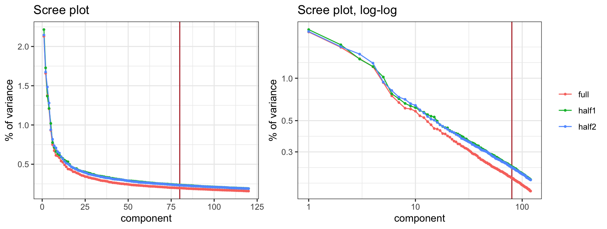
The five rank-\(r\) fits overlap but
do not completely agree: of the 400 columns they produce, 185 (\(x|x|\)), 128 (exp_fixed) and
125 (\(x^3\)) are distinct.
Initializing at these does not add to the number of topics found.
Clustering results are insensitive to the choice of cutoff (threshold
varied between correlation 0.90 and 0.99).
t(sapply(cts, function(ct) {
f <- get("full", ct)
c(`distinct rank-r` = f$n_rankr_distinct, `cut 0.90` = f$sens[1],
`cut 0.95` = f$sens[2], `cut 0.99` = f$sens[3], maxima = ncol(f$W))
})) distinct rank-r cut 0.90 cut 0.95 cut 0.99 maxima
x|x| 185 18 18 18 18
exp_fixed 128 24 24 24 24
x^3 125 36 36 36 36Stages 2 and 3 produce no additional maxima — under no contrast and in no space. Every direction transferred in, whether from another contrast or from another space, relaxes onto a maximum the receiving search had already found.
z <- unlist(lapply(sps, function(sp) lapply(cts, function(ct)
unlist(get(sp, ct)$n_cross))))
c(`transfers performed` = length(z), `new maxima found` = sum(z))transfers performed new maxima found
36 0 Thus, when a half does not have a factor, it is because the factor is not a maximum of that half’s objective, not because 1000 starts failed to find it. The same applies across contrasts: a factor one contrast finds and another does not is a genuine difference between the objectives.
for (ct in cts) {
f <- get("full", ct); A <- memb(f$L)
cat(sprintf("\n#### %s\n\n", ct))
print(knitr::kable(data.frame(
factor = colnames(f$L), from_random = f$n_random, from_rankr = f$n_from_rankr,
docs_above_0.5 = colSums(A > 0.5),
top_category = apply(A, 2, function(a)
names(sort(tapply(a, lab, mean), decreasing = TRUE))[1]),
R2_category = round(apply(A, 2, function(a) r2_by(a, lab)), 2)),
row.names = FALSE,
caption = "How each maximum was reached, and how it relates to the editorial categories"))
cat("\n")
}| factor | from_random | from_rankr | docs_above_0.5 | top_category | R2_category |
|---|---|---|---|---|---|
| test/athlet | 296 | 14 | 16 | Sports | 0.07 |
| yuko/oil | 138 | 6 | 23 | Business | 0.08 |
| user/secur | 74 | 11 | 34 | Tech | 0.28 |
| offer/bid | 75 | 10 | 18 | Business | 0.13 |
| growth/economi | 71 | 12 | 68 | Business | 0.24 |
| parti/labour | 51 | 22 | 83 | Politics | 0.41 |
| award/film | 62 | 11 | 54 | Entertainment | 0.27 |
| england/ireland | 48 | 22 | 88 | Sports | 0.23 |
| open/win | 55 | 11 | 64 | Sports | 0.16 |
| mobil/phone | 49 | 10 | 50 | Tech | 0.23 |
| music/band | 31 | 15 | 80 | Entertainment | 0.29 |
| law/lord | 16 | 10 | 16 | Politics | 0.19 |
| sale/profit | 13 | 9 | 44 | Business | 0.23 |
| club/chelsea | 8 | 11 | 65 | Sports | 0.28 |
| show/bbc | 5 | 4 | 54 | Entertainment | 0.20 |
| game/play | 5 | 1 | 52 | Tech | 0.16 |
| compani/firm | 3 | 2 | 13 | Business | 0.09 |
| countri/world | 0 | 4 | 52 | Business | 0.08 |
| factor | from_random | from_rankr | docs_above_0.5 | top_category | R2_category |
|---|---|---|---|---|---|
| test/athlet | 203 | 4 | 14 | Sports | 0.05 |
| yuko/russian | 133 | 3 | 23 | Business | 0.05 |
| bid/offer | 104 | 6 | 15 | Business | 0.06 |
| virus/secur | 73 | 7 | 24 | Tech | 0.15 |
| open/win | 53 | 6 | 57 | Sports | 0.13 |
| rate/growth | 43 | 7 | 52 | Business | 0.16 |
| olymp/race | 42 | 6 | 41 | Sports | 0.10 |
| award/film | 40 | 4 | 34 | Entertainment | 0.19 |
| mobil/phone | 40 | 4 | 42 | Tech | 0.16 |
| number/top | 39 | 3 | 25 | Entertainment | 0.13 |
| england/wale | 24 | 16 | 62 | Sports | 0.19 |
| blair/brown | 25 | 9 | 30 | Politics | 0.21 |
| lord/law | 24 | 7 | 15 | Politics | 0.12 |
| tori/parti | 24 | 6 | 50 | Politics | 0.27 |
| profit/sale | 20 | 9 | 30 | Business | 0.16 |
| dollar/trade | 27 | 1 | 25 | Business | 0.13 |
| minut/half | 22 | 1 | 35 | Sports | 0.13 |
| worldcom/fraud | 20 | 3 | 10 | Business | 0.05 |
| game/consol | 17 | 4 | 31 | Tech | 0.15 |
| band/album | 8 | 10 | 51 | Entertainment | 0.23 |
| chelsea/club | 5 | 6 | 40 | Sports | 0.23 |
| show/bbc | 7 | 2 | 46 | Entertainment | 0.17 |
| music/digit | 6 | 2 | 30 | Tech | 0.13 |
| countri/aid | 1 | 2 | 22 | Business | 0.04 |
| factor | from_random | from_rankr | docs_above_0.5 | top_category | R2_category |
|---|---|---|---|---|---|
| test/athlet | 161 | 2 | 14 | Sports | 0.05 |
| yuko/russian | 96 | 2 | 23 | Business | 0.06 |
| london/bid | 77 | 4 | 10 | Business | 0.05 |
| top/box | 58 | 9 | 13 | Entertainment | 0.11 |
| unit/club | 51 | 2 | 7 | Business | 0.03 |
| rate/bank | 44 | 7 | 16 | Business | 0.10 |
| secur/virus | 47 | 2 | 24 | Tech | 0.15 |
| indoor/olymp | 42 | 6 | 37 | Sports | 0.10 |
| fraud/worldcom | 33 | 2 | 11 | Business | 0.05 |
| seed/final | 32 | 1 | 45 | Sports | 0.12 |
| open/australian | 23 | 10 | 8 | Sports | 0.11 |
| award/nomin | 27 | 6 | 35 | Entertainment | 0.18 |
| lord/law | 26 | 7 | 15 | Politics | 0.13 |
| mobil/phone | 27 | 4 | 44 | Tech | 0.17 |
| price/oil | 25 | 1 | 8 | Business | 0.12 |
| game/consol | 24 | 2 | 18 | Tech | 0.14 |
| broadband/net | 19 | 6 | 13 | Tech | 0.15 |
| england/robinson | 20 | 5 | 34 | Sports | 0.18 |
| minut/half | 16 | 5 | 37 | Sports | 0.14 |
| parti/ukip | 18 | 3 | 11 | Politics | 0.10 |
| dollar/trade | 18 | 1 | 20 | Business | 0.12 |
| blair/minist | 13 | 6 | 30 | Politics | 0.23 |
| profit/sale | 13 | 4 | 26 | Business | 0.17 |
| govern/public | 12 | 3 | 7 | Politics | 0.07 |
| music/file | 13 | 2 | 13 | Tech | 0.10 |
| european/law | 13 | 1 | 7 | Tech | 0.04 |
| show/bbc | 10 | 2 | 36 | Entertainment | 0.16 |
| tori/howard | 8 | 3 | 54 | Politics | 0.30 |
| film/festiv | 8 | 2 | 17 | Entertainment | 0.19 |
| tax/budget | 7 | 1 | 29 | Politics | 0.14 |
| search/peopl | 7 | 1 | 18 | Tech | 0.23 |
| chelsea/leagu | 3 | 5 | 29 | Sports | 0.22 |
| technolog/high | 4 | 3 | 6 | Tech | 0.18 |
| wale/franc | 4 | 2 | 35 | Sports | 0.17 |
| countri/tsunami | 1 | 1 | 18 | Business | 0.06 |
| children/school | 0 | 2 | 20 | Politics | 0.07 |
Word loadings come from regressing the centred \(\log(1 + X/s)\) matrix on the non-negative
part of the document loadings (scaled to a maximum of 1) with an
intercept, as in code/fit_immgent_ebproj.R.
The half1 and half2 columns are the cosine to
each half’s mutual nearest neighbour and in_both flags the
factors that reproduce; those come from the split analysed further down,
and are repeated here so each factor can be read off with its key words
in one place.
for (ct in cts) {
cat(sprintf("\n#### %s\n\n", ct))
print(knitr::kable(factor_table(get, ct), row.names = FALSE,
caption = "Full-data maxima, key words, and reproducibility in each half"))
cat("\n")
}| factor | half1 | half2 | in_both | top_words |
|---|---|---|---|---|
| test/athlet | 0.95 | 0.97 | yes | test, athlet, olymp, drug, kenteri, greek, thanou, iaaf, ban, athen |
| yuko/oil | 0.97 | 0.85 | yes | yuko, oil, russian, tax, court, compani, russia, state, unit, gazprom |
| user/secur | 0.93 | 0.96 | yes | user, secur, softwar, virus, program, comput, firm, microsoft, mail, window |
| offer/bid | 0.90 | 0.91 | yes | offer, bid, share, stock, takeov, sharehold, deutsch, exchang, london, lse |
| growth/economi | 0.98 | 0.98 | yes | growth, economi, rate, econom, rise, bank, month, figur, price, economist |
| parti/labour | 0.98 | 0.98 | yes | parti, labour, elect, tori, howard, tax, conserv, blair, campaign, leader |
| award/film | 0.97 | 0.97 | yes | award, film, nomin, won, oscar, actor, actress, prize, director, star |
| england/ireland | 0.97 | 0.97 | yes | england, ireland, nation, wale, coach, franc, side, game, rugbi, win |
| open/win | 0.97 | 0.96 | yes | open, win, play, final, match, seed, australian, beat, set, champion |
| mobil/phone | 0.96 | 0.96 | yes | mobil, phone, technolog, servic, peopl, handset, network, digit, devic, camera |
| music/band | 0.96 | 0.97 | yes | music, band, album, song, singl, chart, record, releas, top, number |
| law/lord | 0.96 | - | law, lord, rule, govern, right, court, terror, hous, home, secretari | |
| sale/profit | 0.95 | - | sale, profit, compani, share, firm, year, market, expect, analyst, euro | |
| club/chelsea | 0.96 | 0.96 | yes | club, chelsea, leagu, play, cup, player, team, unit, side, boss |
| show/bbc | 0.88 | 0.94 | yes | show, bbc, broadcast, seri, programm, viewer, channel, televis, audienc, star |
| game/play | 0.88 | 0.95 | yes | game, play, consol, player, soni, gamer, titl, video, nintendo, releas |
| compani/firm | 0.92 | - | compani, firm, fraud, chief, execut, worldcom, face, charg, account, ebber | |
| countri/world | - | 0.87 | countri, world, intern, aid, nation, econom, debt, bank, tsunami, govern |
| factor | half1 | half2 | in_both | top_words |
|---|---|---|---|---|
| test/athlet | 0.95 | 0.97 | yes | test, athlet, drug, olymp, kenteri, greek, thanou, iaaf, athen, charg |
| yuko/russian | 0.97 | 0.90 | yes | yuko, russian, oil, tax, court, compani, russia, gazprom, rosneft, bankruptci |
| bid/offer | 0.91 | 0.72 | yes | bid, offer, share, deutsch, takeov, lse, boers, sharehold, exchang, stock |
| virus/secur | 0.91 | 0.95 | yes | virus, secur, program, user, softwar, microsoft, window, firm, mail, comput |
| open/win | 0.96 | 0.86 | yes | open, win, play, final, seed, match, australian, beat, set, champion |
| rate/growth | 0.97 | 0.94 | yes | rate, growth, economi, rise, month, bank, figur, econom, consum, quarter |
| olymp/race | 0.96 | 0.95 | yes | olymp, race, indoor, win, champion, world, championship, european, record, titl |
| award/film | 0.95 | 0.98 | yes | award, film, nomin, oscar, actor, won, actress, star, director, win |
| mobil/phone | 0.95 | 0.95 | yes | mobil, phone, handset, technolog, peopl, servic, network, camera, messag, oper |
| number/top | - | 0.96 | number, top, box, chart, film, offic, week, place, releas, take | |
| england/wale | 0.96 | 0.97 | yes | england, wale, nation, coach, ireland, franc, game, win, robinson, rugbi |
| blair/brown | 0.95 | - | blair, brown, labour, minist, elect, prime, chancellor, toni, gordon, campaign | |
| lord/law | 0.96 | 0.88 | yes | lord, law, terror, right, govern, rule, human, trial, secretari, hous |
| tori/parti | 0.97 | 0.97 | yes | tori, parti, labour, howard, elect, tax, conserv, leader, michael, lib |
| profit/sale | 0.95 | 0.95 | yes | profit, sale, year, share, compani, market, expect, firm, euro, analyst |
| dollar/trade | 0.93 | - | dollar, trade, oil, price, euro, deficit, export, market, currenc, record | |
| minut/half | 0.70 | 0.85 | yes | minut, half, goal, ball, score, penalti, kick, lead, side, chanc |
| worldcom/fraud | 0.92 | - | worldcom, fraud, compani, ebber, firm, account, face, charg, chief, execut | |
| game/consol | 0.92 | - | game, consol, play, soni, gamer, nintendo, titl, releas, video, player | |
| band/album | 0.96 | 0.97 | yes | band, album, music, song, singl, singer, award, record, rock, perform |
| chelsea/club | 0.93 | 0.93 | yes | chelsea, club, leagu, play, win, player, cup, team, game, season |
| show/bbc | 0.77 | (0.65) | show, bbc, seri, broadcast, viewer, channel, programm, televis, audienc, star | |
| music/digit | - | - | music, digit, file, download, industri, share, peer, legal, technolog, appl | |
| countri/aid | - | 0.92 | countri, aid, tsunami, disast, debt, world, nation, relief, bank, develop |
| factor | half1 | half2 | in_both | top_words |
|---|---|---|---|---|
| test/athlet | 0.95 | 0.96 | yes | test, athlet, olymp, kenteri, drug, greek, thanou, iaaf, miss, athen |
| yuko/russian | 0.97 | 0.90 | yes | yuko, russian, court, oil, tax, russia, compani, gazprom, sale, unit |
| london/bid | 0.93 | - | london, bid, deutsch, lse, boers, offer, report, exchang, stock, euronext | |
| top/box | 0.94 | 0.91 | yes | top, box, offic, number, chart, week, film, take, place, releas |
| unit/club | - | 0.92 | unit, club, manchest, glazer, offer, board, propos, support, bid, receiv | |
| rate/bank | 0.79 | 0.93 | yes | rate, bank, month, figur, hous, rise, market, decemb, price, growth |
| secur/virus | 0.87 | 0.93 | yes | secur, virus, program, user, softwar, window, microsoft, firm, anti, mail |
| indoor/olymp | 0.95 | 0.94 | yes | indoor, olymp, win, race, european, champion, world, championship, record, mark |
| fraud/worldcom | 0.92 | - | fraud, worldcom, face, firm, ebber, compani, account, chief, charg, execut | |
| seed/final | 0.91 | 0.76 | yes | seed, final, set, beat, win, match, play, top, break, game |
| open/australian | 0.84 | 0.83 | yes | open, australian, injuri, event, januari, women, grand, slam, champion, wimbledon |
| award/nomin | 0.94 | 0.98 | yes | award, nomin, film, oscar, actor, actress, won, win, director, aviat |
| lord/law | 0.95 | (0.52) | lord, law, govern, right, terror, home, rule, secretari, human, trial | |
| mobil/phone | 0.93 | 0.94 | yes | mobil, phone, peopl, technolog, handset, servic, messag, camera, network, digit |
| price/oil | 0.91 | - | price, oil, product, crude, barrel, high, demand, suppli, week, london | |
| game/consol | 0.93 | 0.91 | yes | game, consol, play, sale, nintendo, soni, million, releas, market, gamer |
| broadband/net | - | 0.90 | broadband, net, million, servic, internet, speed, report, home, number, connect | |
| england/robinson | 0.93 | 0.93 | yes | england, robinson, rugbi, play, injuri, nation, andi, ireland, bath, week |
| minut/half | (0.60) | 0.83 | minut, half, goal, ball, score, kick, penalti, lead, side, chanc | |
| parti/ukip | - | 0.89 | parti, ukip, elect, kilroy, silk, seat, member, polit, candid, report | |
| dollar/trade | - | - | dollar, trade, euro, deficit, market, currenc, export, record, econom, bank | |
| blair/minist | 0.95 | 0.90 | yes | blair, minist, labour, prime, elect, brown, toni, chancellor, campaign, parti |
| profit/sale | 0.79 | 0.94 | yes | profit, sale, year, share, expect, compani, cost, execut, quarter, market |
| govern/public | 0.91 | - | govern, public, servic, union, pension, work, worker, general, sector, cut | |
| music/file | 0.88 | 0.88 | yes | music, file, share, legal, industri, download, peer, movi, illeg, action |
| european/law | 0.84 | 0.81 | yes | european, law, patent, softwar, compani, comput, minist, direct, develop, support |
| show/bbc | (0.55) | 0.89 | show, bbc, seri, broadcast, channel, viewer, programm, televis, audienc, million | |
| tori/howard | 0.94 | 0.89 | yes | tori, howard, labour, parti, conserv, elect, michael, peopl, leader, plan |
| film/festiv | - | 0.83 | film, festiv, director, day, cinema, award, screen, star, stori, berlin | |
| tax/budget | 0.93 | - | tax, budget, brown, spend, increas, chancellor, £bn, economi, rise, cut | |
| search/peopl | 0.85 | 0.90 | yes | search, peopl, googl, site, web, inform, user, websit, engin, onlin |
| chelsea/leagu | 0.80 | 0.91 | yes | chelsea, leagu, club, win, team, liverpool, play, champion, season, cup |
| technolog/high | - | (0.57) | technolog, high, dvd, definit, digit, soni, data, film, format, video | |
| wale/franc | 0.94 | - | wale, franc, win, william, scotland, game, itali, team, nation, coach | |
| countri/tsunami | - | 0.91 | countri, tsunami, aid, disast, cost, million, bank, govern, debt, nation | |
| children/school | - | - | children, school, educ, research, parent, young, part, govern, univers, peopl |
Every factor under every contrast is a recognisable topic, and none is a nuisance axis: there is no document-length or vocabulary-size factor, which is what dividing by \(s\) and then applying a variance-stabilising transform is supposed to achieve.
The three lists are nested rather than different. \(x|x|\) finds 18: athletics and doping,
Yukos, computer security, takeover bids, the macroeconomy, party
politics, film awards, rugby, tennis, mobile phones, music, law and
civil liberties, football clubs, company results, television, video
games, corporate fraud, and developing-world aid. exp_fixed
finds those and splits six of them further — doping from track
championships, party competition from the Blair/Brown government, the
dollar and trade deficit from the macroeconomy, digital music from
music, the football match report from rugby, and a box-office axis out
of entertainment.
\(x^3\) goes further again, to 36.
Where exp_fixed has one tennis factor it has two; where it
has one rugby factor it has three; and it separates business stories the
others merge — the LSE/Deutsche Börse bid, oil prices, company results.
The most striking addition is unit/club,
led by “Shares rise on new Man Utd offer”: the Glazer takeover,
which appears in the cross-cutting section below as the clearest example
of a story the editorial partition misfiles, is resolved by \(x^3\) as a topic in its own right.
Documents grouped by their editorial category, memberships on the max-1 scale. The unnormalized panels keep the bar heights: a short bar is a document that none of the factors explains.
# glasbey tops out at 32 colours and x^3 has 36 factors, so fall back to a
# generated palette when the list is longer.
factor_colours <- function(k) {
if (k + 1 <= 32) return(Polychrome::glasbey.colors(k + 1)[-1])
unname(Polychrome::createPalette(k, c("#5A5156", "#E4E1E3", "#F6222E"),
M = 2000))
}
plot_struct <- function(A, normalize, title) {
keep <- rowSums(A) > 0
M <- A[keep, ]
if (normalize) M <- M / rowSums(M)
set.seed(1) # structure_plot orders within each group by t-SNE
structure_plot(M, grouping = droplevels(lab[keep]), gap = 20, verbose = FALSE,
colors = factor_colours(ncol(M))) +
labs(y = "membership", fill = NULL,
title = sprintf("%s: %d maxima, %s%s", title, ncol(M),
if (normalize) "normalized" else "unnormalized",
if (all(keep)) "" else
sprintf(" - %d document(s) dropped", sum(!keep)))) +
theme(axis.text.x = element_text(size = 9),
legend.text = element_text(size = 6),
legend.key.size = unit(0.3, "cm"))
}for (ct in cts) for (nz in c(TRUE, FALSE)) {
cat(sprintf("\n#### %s, %s\n\n", ct, if (nz) "normalized" else "unnormalized"))
print(plot_struct(memb(get("full", ct)$L), nz, ct))
cat("\n")
}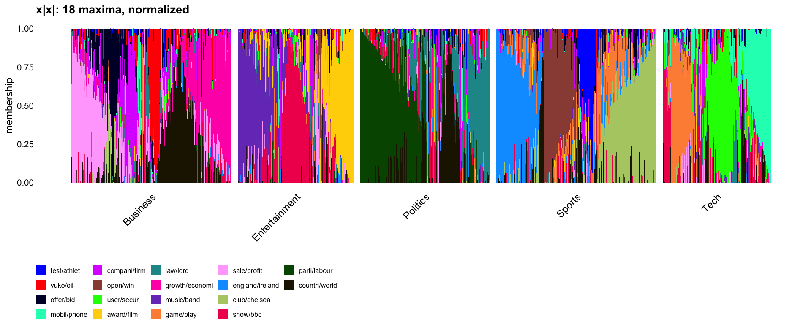
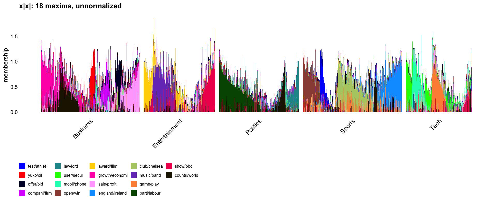
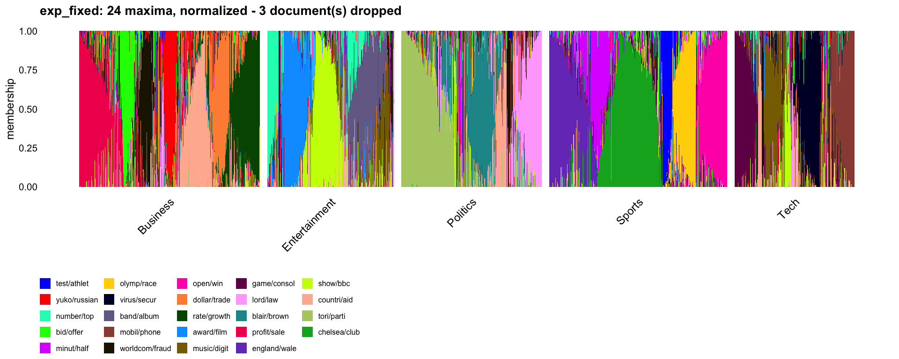
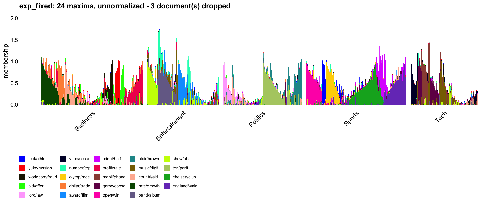
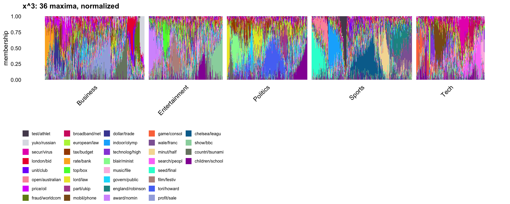
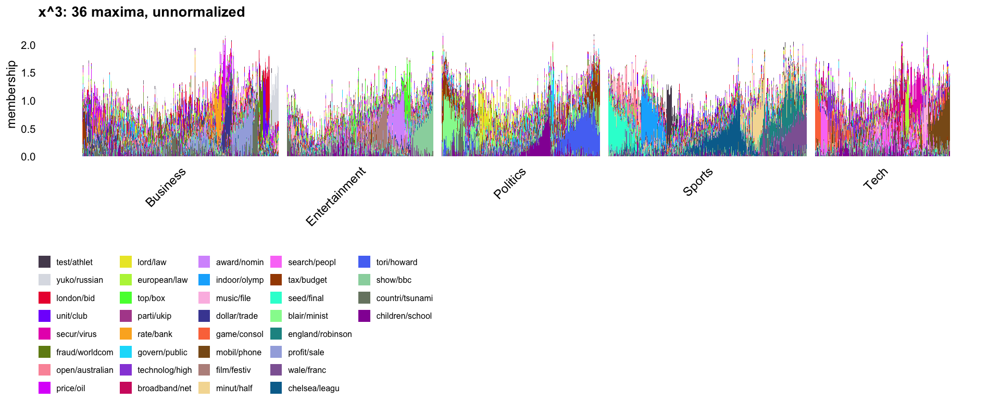
The unnormalized panels are the informative ones, and they separate the three contrasts more clearly than the factor lists do.
t(sapply(cts, function(ct) {
A <- memb(get("full", ct)$L)
c(factors = ncol(A), `median total membership` = round(median(rowSums(A)), 2),
`docs explained by nothing` = sum(rowSums(A) < 0.1),
`median docs above 0.5` = median(colSums(A > 0.5)))
})) factors median total membership docs explained by nothing
x|x| 18 0.70 31
exp_fixed 24 0.51 172
x^3 36 1.07 0
median docs above 0.5
x|x| 52.0
exp_fixed 30.5
x^3 18.0Under \(x|x|\) and
exp_fixed the decomposition is sparse in the documents —
most bars are well short of 1, and exp_fixed leaves 172
documents, 8% of the corpus, with essentially nothing on them. \(x^3\) is different: with 36 narrow factors
the median total membership rises above 1 and no
document is left unexplained. So the resolution ladder is also a
coverage ladder.
All three remain “which articles are strongly on this topic” decompositions rather than a soft clustering of the corpus, which is the obvious contrast with what the log1p NMF fits of Weine et al. produce on the same data.
Comparison on the raw projections \(U^Tw\), unshrunken on all three sides —
exp_fixed’s reported loadings are posterior means, and the
shrinkage attenuates correlations that are otherwise near 1.
t(sapply(list(c("x|x|", "exp_fixed"), c("x|x|", "x^3"), c("exp_fixed", "x^3")),
function(pr) {
m <- mnn(cor(Xraw[[pr[1]]], Xraw[[pr[2]]]))
c(`factors, first` = ncol(Xraw[[pr[1]]]), `factors, second` = ncol(Xraw[[pr[2]]]),
`mutual pairs` = sum(m$mutual), `median r` = round(median(m$cos[m$mutual]), 3),
`pairs above 0.9` = sum(m$mutual & m$cos > 0.9))
})) |> `rownames<-`(c("x|x| vs exp_fixed", "x|x| vs x^3", "exp_fixed vs x^3")) factors, first factors, second mutual pairs median r
x|x| vs exp_fixed 18 24 18 0.980
x|x| vs x^3 18 36 17 0.912
exp_fixed vs x^3 24 36 23 0.983
pairs above 0.9
x|x| vs exp_fixed 17
x|x| vs x^3 11
exp_fixed vs x^3 20The three are not finding different structure. Every \(x|x|\) factor has an exp_fixed
partner at a median correlation of 0.980; exp_fixed and
\(x^3\) agree even more closely, 23 of
24 pairs at 0.983. They are finding the same structure at three
resolutions, and each contrast in turn keeps splitting after the
previous one has stopped.
for (pr in list(c("x|x|", "exp_fixed"), c("exp_fixed", "x^3"))) {
cat(sprintf("\n#### %s vs %s\n\n", pr[1], pr[2]))
print(knitr::kable(pair_contrasts(Xraw[[pr[1]]], Xraw[[pr[2]]], pr[1], pr[2]),
row.names = FALSE, caption = "One row per factor, paired by mutual nearest neighbour"))
cat("\n")
}| x|x| | exp_fixed | cor |
|---|---|---|
| test/athlet | test/athlet | 0.99 |
| yuko/oil | yuko/russian | 0.99 |
| user/secur | virus/secur | 0.97 |
| offer/bid | bid/offer | 0.97 |
| growth/economi | rate/growth | 0.98 |
| parti/labour | tori/parti | 0.94 |
| award/film | award/film | 0.97 |
| england/ireland | england/wale | 1.00 |
| open/win | open/win | 0.99 |
| mobil/phone | mobil/phone | 0.99 |
| music/band | band/album | 0.98 |
| law/lord | lord/law | 0.98 |
| sale/profit | profit/sale | 0.96 |
| club/chelsea | chelsea/club | 0.98 |
| show/bbc | show/bbc | 0.98 |
| game/play | game/consol | 0.96 |
| compani/firm | worldcom/fraud | 0.98 |
| countri/world | countri/aid | 0.82 |
| - | olymp/race | - |
| - | number/top | - |
| - | blair/brown | - |
| - | dollar/trade | - |
| - | minut/half | - |
| - | music/digit | - |
| exp_fixed | x^3 | cor |
|---|---|---|
| test/athlet | test/athlet | 0.99 |
| yuko/russian | yuko/russian | 1.00 |
| bid/offer | london/bid | 0.92 |
| virus/secur | secur/virus | 0.99 |
| open/win | seed/final | 0.95 |
| rate/growth | rate/bank | 0.71 |
| olymp/race | indoor/olymp | 0.98 |
| award/film | award/nomin | 0.97 |
| mobil/phone | mobil/phone | 1.00 |
| number/top | top/box | 0.86 |
| england/wale | england/robinson | 0.93 |
| blair/brown | blair/minist | 0.99 |
| lord/law | lord/law | 0.99 |
| tori/parti | tori/howard | 0.99 |
| profit/sale | profit/sale | 0.99 |
| dollar/trade | dollar/trade | 0.93 |
| minut/half | minut/half | 0.99 |
| worldcom/fraud | fraud/worldcom | 0.98 |
| game/consol | game/consol | 0.93 |
| band/album | - | - |
| chelsea/club | chelsea/leagu | 0.92 |
| show/bbc | show/bbc | 0.99 |
| music/digit | music/file | 0.82 |
| countri/aid | countri/tsunami | 0.96 |
| - | unit/club | - |
| - | open/australian | - |
| - | price/oil | - |
| - | broadband/net | - |
| - | parti/ukip | - |
| - | govern/public | - |
| - | european/law | - |
| - | film/festiv | - |
| - | tax/budget | - |
| - | search/peopl | - |
| - | technolog/high | - |
| - | wale/franc | - |
| - | children/school | - |
Thirteen of the 36 \(x^3\) factors
have no exp_fixed counterpart, and they are all genuine
extra resolution: the Man Utd takeover, a second tennis factor, oil
prices, broadband, UKIP, public-sector pensions, EU patent law, film
festivals, the Budget, search engines, DVD technology, France/Wales
rugby, and games in schools. Going the other way, only one
exp_fixed factor, band/album, has no \(x^3\) partner.
mr <- mnn(cor(Xraw[["x|x|"]], Xraw[["exp_fixed"]]))
ord <- order(mr$cos)
pd <- do.call(rbind, lapply(ord, function(i) data.frame(
xx = Xraw[["x|x|"]][, i], ef = Xraw[["exp_fixed"]][, mr$j[i]], category = lab,
panel = sprintf("%s / %s\nr = %.3f", colnames(Xraw[["x|x|"]])[i],
colnames(Xraw[["exp_fixed"]])[mr$j[i]], mr$cos[i]))))
pd$panel <- factor(pd$panel, levels = unique(pd$panel))
ggplot(pd, aes(ef, xx, colour = category)) +
geom_abline(slope = 1, intercept = 0, colour = "grey60") +
geom_point(size = 0.4, alpha = 0.4) +
facet_wrap(~ panel, ncol = 4, scales = "free") +
labs(x = "exp_fixed, U'w (unshrunken)", y = "x|x|, U'w", colour = NULL) +
theme_bw() +
theme(strip.text = element_text(size = 6.5), legend.position = "bottom",
axis.text = element_text(size = 6))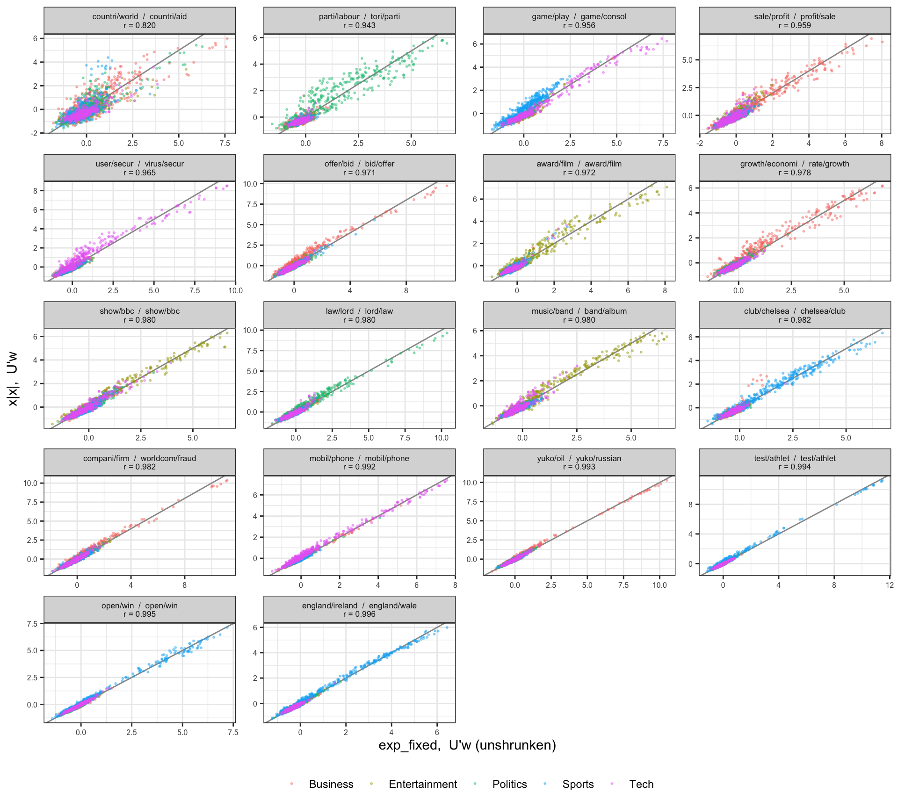
skew <- function(x) mean(x^3) / sd(x)^3
data.frame(
`x|x|` = colnames(Xraw[["x|x|"]]),
exp_fixed = colnames(Xraw[["exp_fixed"]])[mr$j],
r = round(mr$cos, 3),
`skew, x|x|` = round(apply(Xraw[["x|x|"]], 2, skew), 2),
`skew, exp_fixed` = round(apply(Xraw[["exp_fixed"]], 2, skew)[mr$j], 2),
check.names = FALSE)[ord, ] |> knitr::kable(row.names = FALSE,
caption = "x|x| against exp_fixed on the raw projections, worst-matching pairs first")| x|x| | exp_fixed | r | skew, x|x| | skew, exp_fixed |
|---|---|---|---|---|
| countri/world | countri/aid | 0.820 | 2.26 | 2.78 |
| parti/labour | tori/parti | 0.943 | 3.21 | 3.52 |
| game/play | game/consol | 0.956 | 3.12 | 3.62 |
| sale/profit | profit/sale | 0.959 | 2.99 | 3.30 |
| user/secur | virus/secur | 0.965 | 4.63 | 5.27 |
| offer/bid | bid/offer | 0.971 | 4.69 | 5.38 |
| award/film | award/film | 0.972 | 4.08 | 4.49 |
| growth/economi | rate/growth | 0.978 | 3.60 | 3.81 |
| show/bbc | show/bbc | 0.980 | 2.98 | 3.17 |
| law/lord | lord/law | 0.980 | 4.30 | 4.76 |
| music/band | band/album | 0.980 | 3.47 | 3.72 |
| club/chelsea | chelsea/club | 0.982 | 3.01 | 3.18 |
| compani/firm | worldcom/fraud | 0.982 | 4.65 | 5.17 |
| mobil/phone | mobil/phone | 0.992 | 4.29 | 4.44 |
| yuko/oil | yuko/russian | 0.993 | 6.41 | 6.63 |
| test/athlet | test/athlet | 0.994 | 7.70 | 8.03 |
| open/win | open/win | 0.995 | 4.09 | 4.17 |
| england/ireland | england/wale | 0.996 | 3.46 | 3.55 |
Panels are ordered worst match first. The bulk of documents sits in a
tight blob near the origin and falls exactly on the diagonal, and the
two contrasts agree completely about which documents are in the long
positive tail. Where they disagree is the near tail — the
middling documents at 2 to 5 — which exp_fixed pushes out
slightly further. That shows up as skewness: exp_fixed’s
direction is more skewed than \(x|x|\)’s in every pair
without exception, though usually only slightly (median 3.99 against
3.84).
The one substantially different pair is countri/world
against countri/aid at 0.820, and the disagreement there is
one-sided: 25 documents are strongly positive on both, six on \(x|x|\) alone, and none on
exp_fixed alone. The six are not tsunami stories —
“Radcliffe yet to answer GB call”, “Kenya lift Chepkemei’s
suspension”, “GB quartet get cross country call” — so the
\(x|x|\) version of this factor has
picked up African and international distance running through
countri, world and nation, while
the EBproj version stays on the tsunami and aid story. That is the only
pair where two contrasts resolve a topic differently rather than by
degree, and there the exponential prior gives the cleaner factor.
Each half has its own SVD, whitening and search, and stage 3 has already carried every maximum into every other space, so what follows is about the objectives and not about the search. Factors are compared in word space, the only representation the three fits share. (Correlating the fitted word-loading vectors \(B\) instead picks the same partner for every factor whose best match is above 0.6 and agrees with the cosine to within 0.07 on those, so nothing below hinges on the choice of metric.)
Pooling the three comparisons (half 1 vs half 2, full vs each half) and all three contrasts, here is every pairwise cosine, first all together and then split by whether the pair are mutual nearest neighbours.
pairs_all <- do.call(rbind, lapply(cts, function(ct)
do.call(rbind, lapply(list(c("half1", "half2"), c("full", "half1"),
c("full", "half2")), function(pr) {
C <- cosmat(get(pr[1], ct), get(pr[2], ct))
m <- mnn(C)
is_p <- matrix(FALSE, nrow(C), ncol(C))
is_p[cbind(m$i[m$mutual], m$j[m$mutual])] <- TRUE
data.frame(cos = as.vector(C),
kind = ifelse(as.vector(is_p), "mutual nearest neighbours",
"all other pairs"))
}))))
both <- transform(pairs_all, kind = "all pairs together")
ggplot(rbind(both, pairs_all), aes(cos)) +
geom_histogram(binwidth = 0.05, boundary = 0, fill = "grey35") +
geom_vline(xintercept = 0.7, colour = "firebrick") +
facet_wrap(~ factor(kind, c("all pairs together",
"mutual nearest neighbours",
"all other pairs")), scales = "free_y") +
labs(x = "cosine between word-space directions", y = "pairs") +
theme_bw()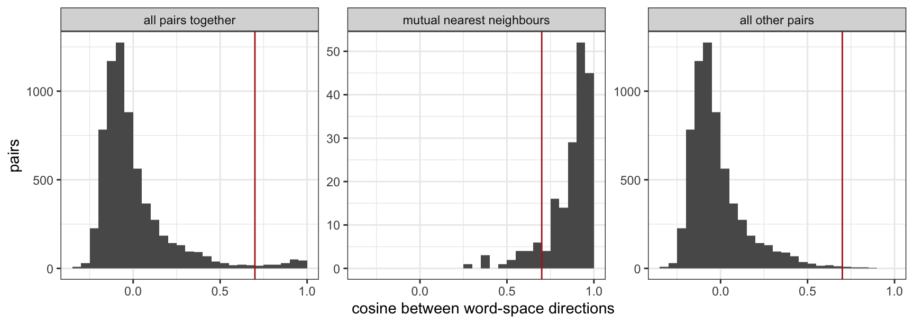
The combined histogram is bimodal: a large mode at zero decaying through 0.5, a trough between 0.65 and 0.80, and a second mode above 0.85. Split apart, neither component is bimodal on its own — the non-partner pairs decay smoothly from zero, the mutual pairs are unimodal with the mode against 1 and a thin tail reaching down. The tail is what a threshold is for: a factor with no real counterpart still has a nearest neighbour, and if its counterpart is equally orphaned the two pair up regardless.
np <- pairs_all$cos[pairs_all$kind != "mutual nearest neighbours"]
mp <- pairs_all$cos[pairs_all$kind == "mutual nearest neighbours"]
rbind(`non-partner pairs` = c(n = length(np),
round(quantile(np, c(.95, .99, .995, 1)), 2)),
`mutual pairs` = c(n = length(mp),
round(quantile(mp, c(.05, .1, .5, 1)), 2))) n 95% 99% 99.5% 100%
non-partner pairs 6413 0.33 0.57 0.66 0.87
mutual pairs 181 0.56 0.69 0.91 0.98The null agrees with the antimode: non-partner cosines reach 0.66 at their 99.5th percentile. The criterion used throughout is mutual nearest neighbour plus cosine > 0.7, which sits in the trough of the combined distribution and just above the 99.5th percentile of the null.
t(sapply(cts, function(ct) count_row(get, ct))) full half1 half2 full in both halves h1-h2 matched ceiling rate
x|x| 18 21 16 14 12 16 0.75
exp_fixed 24 24 22 16 14 22 0.64
x^3 36 36 37 19 11 36 0.31Resolution and reproducibility pull in opposite
directions. The half-to-half match rate — the fraction of the
maximum possible pairs that match, and the most demanding of these
measures — falls monotonically as the contrasts get finer: 0.75 for
\(x|x|\), 0.64 for
exp_fixed, 0.31 for \(x^3\). Against the full data rather than
between the halves, \(x^3\) still has
the most reproducible factors in absolute terms (19, against 16 and 14),
but that is barely half its list.
The reason is visible in the contrasts themselves. \(x^3\) weights a loading by its cube, so a direction is rewarded for a few very large values much more strongly than \(x|x|\), which weights by the square. That is what lets it isolate a topic carried by ten documents, and also what makes the particular ten depend on the sample.
One row per topic, aligning the full data and the two halves. Rows
are anchored on the full-data maxima; any half factor that no full-data
factor claims gets its own row at the bottom, paired with its own mutual
nearest neighbour in the other half where it has one. The
h1-h2 column is the cosine between the two half factors on
that row — reported, but not required for in_both, which
uses the same rule as the summary above.
consolidate <- function(ct) {
fu <- get("full", ct); f1 <- get("half1", ct); f2 <- get("half2", ct)
m1 <- mnn(cosmat(fu, f1)); m2 <- mnn(cosmat(fu, f2))
C12 <- cosmat(f1, f2); m12 <- mnn(C12)
i1 <- ifelse(m1$mutual, m1$j, NA); i2 <- ifelse(m2$mutual, m2$j, NA)
c1 <- ifelse(m1$mutual, m1$cos, NA); c2 <- ifelse(m2$mutual, m2$cos, NA)
l1 <- setdiff(seq_len(ncol(f1$L)), na.omit(i1))
l2 <- setdiff(seq_len(ncol(f2$L)), na.omit(i2))
j1 <- ifelse(m12$mutual[l1] & m12$j[l1] %in% l2, m12$j[l1], NA)
l2 <- setdiff(l2, na.omit(j1))
x1 <- c(l1, rep(NA, length(l2))); x2 <- c(j1, l2)
d <- data.frame(
full = c(colnames(fu$L), rep("-", length(x1))),
half1 = c(pick(colnames(f1$L), i1), pick(colnames(f1$L), x1)),
half2 = c(pick(colnames(f2$L), i2), pick(colnames(f2$L), x2)),
`full-h1` = fmt(c(c1, rep(NA, length(x1)))),
`full-h2` = fmt(c(c2, rep(NA, length(x2)))),
`h1-h2` = fmt(c(ifelse(is.na(i1) | is.na(i2), NA,
C12[cbind(pmax(i1, 1), pmax(i2, 1))]),
ifelse(is.na(x1) | is.na(x2), NA,
C12[cbind(pmax(x1, 1), pmax(x2, 1))]))),
check.names = FALSE)
d$in_both <- ifelse(d$half1 != "-" & d$half2 != "-" &
!grepl("\\(", paste(d$`full-h1`, d$`full-h2`)),
"yes", "")
d
}
for (ct in cts) {
cat(sprintf("\n#### %s\n\n", ct))
print(knitr::kable(consolidate(ct), row.names = FALSE,
caption = "Every maximum across the three fits, one row per topic"))
cat("\n")
}| full | half1 | half2 | full-h1 | full-h2 | h1-h2 | in_both |
|---|---|---|---|---|---|---|
| test/athlet | test/drug | test/athlet | 0.95 | 0.97 | 0.87 | yes |
| yuko/oil | yuko/russian | oil/yuko | 0.97 | 0.85 | 0.75 | yes |
| user/secur | mail/user | program/user | 0.93 | 0.96 | 0.80 | yes |
| offer/bid | bid/offer | share/bid | 0.90 | 0.91 | (0.70) | yes |
| growth/economi | growth/rate | economi/growth | 0.98 | 0.98 | 0.92 | yes |
| parti/labour | parti/elect | labour/parti | 0.98 | 0.98 | 0.94 | yes |
| award/film | award/film | film/award | 0.97 | 0.97 | 0.90 | yes |
| england/ireland | england/wale | england/nation | 0.97 | 0.97 | 0.90 | yes |
| open/win | open/play | open/win | 0.97 | 0.96 | 0.87 | yes |
| mobil/phone | mobil/phone | mobil/phone | 0.96 | 0.96 | 0.86 | yes |
| music/band | music/band | music/album | 0.96 | 0.97 | 0.88 | yes |
| law/lord | lord/law | - | 0.96 | - | - | |
| sale/profit | profit/sale | - | 0.95 | - | - | |
| club/chelsea | leagu/club | club/chelsea | 0.96 | 0.96 | 0.85 | yes |
| show/bbc | show/bbc | show/broadcast | 0.88 | 0.94 | (0.70) | yes |
| game/play | game/consol | game/play | 0.88 | 0.95 | 0.72 | yes |
| compani/firm | account/fraud | - | 0.92 | - | - | |
| countri/world | - | countri/aid | - | 0.87 | - | |
| - | ireland/half | - | - | - | - | |
| - | race/olymp | - | - | - | - | |
| - | dollar/price | - | - | - | - | |
| - | blair/brown | - | - | - | - | |
| - | - | report/net | - | - | - |
| full | half1 | half2 | full-h1 | full-h2 | h1-h2 | in_both |
|---|---|---|---|---|---|---|
| test/athlet | test/drug | test/athlet | 0.95 | 0.97 | 0.86 | yes |
| yuko/russian | yuko/russian | yuko/oil | 0.97 | 0.90 | 0.80 | yes |
| bid/offer | bid/deutsch | club/unit | 0.91 | 0.72 | (0.50) | yes |
| virus/secur | virus/mail | program/secur | 0.91 | 0.95 | 0.76 | yes |
| open/win | open/seed | open/australian | 0.96 | 0.86 | 0.75 | yes |
| rate/growth | growth/rate | economi/growth | 0.97 | 0.94 | 0.89 | yes |
| olymp/race | olymp/race | european/indoor | 0.96 | 0.95 | 0.83 | yes |
| award/film | award/film | award/film | 0.95 | 0.98 | 0.89 | yes |
| mobil/phone | mobil/phone | mobil/phone | 0.95 | 0.95 | 0.83 | yes |
| number/top | - | number/top | - | 0.96 | - | |
| england/wale | england/wale | england/wale | 0.96 | 0.97 | 0.89 | yes |
| blair/brown | blair/brown | - | 0.95 | - | - | |
| lord/law | lord/terror | lord/law | 0.96 | 0.88 | 0.78 | yes |
| tori/parti | parti/elect | tori/labour | 0.97 | 0.97 | 0.91 | yes |
| profit/sale | profit/sale | profit/sale | 0.95 | 0.95 | 0.84 | yes |
| dollar/trade | dollar/trade | - | 0.93 | - | - | |
| minut/half | ireland/gara | goal/minut | 0.70 | 0.85 | (0.41) | yes |
| worldcom/fraud | ebber/worldcom | - | 0.92 | - | - | |
| game/consol | game/consol | - | 0.92 | - | - | |
| band/album | album/band | music/album | 0.96 | 0.97 | 0.88 | yes |
| chelsea/club | leagu/unit | chelsea/club | 0.93 | 0.93 | 0.78 | yes |
| show/bbc | bbc/show | show/vote | 0.77 | (0.65) | (0.36) | |
| music/digit | - | - | - | - | - | |
| countri/aid | - | countri/aid | - | 0.92 | - | |
| - | chip/cost | - | - | - | - | |
| - | servic/pension | - | - | - | - | |
| - | bank/account | - | - | - | - | |
| - | - | hous/price | - | - | - | |
| - | - | film/festiv | - | - | - | |
| - | - | net/broadband | - | - | - |
| full | half1 | half2 | full-h1 | full-h2 | h1-h2 | in_both |
|---|---|---|---|---|---|---|
| test/athlet | test/drug | test/athlet | 0.95 | 0.96 | 0.85 | yes |
| yuko/russian | yuko/russian | yuko/oil | 0.97 | 0.90 | 0.80 | yes |
| london/bid | bid/deutsch | - | 0.93 | - | - | |
| top/box | film/offic | number/top | 0.94 | 0.91 | 0.80 | yes |
| unit/club | - | unit/club | - | 0.92 | - | |
| rate/bank | growth/rate | hous/price | 0.79 | 0.93 | (0.61) | yes |
| secur/virus | virus/secur | secur/program | 0.87 | 0.93 | (0.69) | yes |
| indoor/olymp | olymp/indoor | european/indoor | 0.95 | 0.94 | 0.80 | yes |
| fraud/worldcom | ebber/worldcom | - | 0.92 | - | - | |
| seed/final | seed/set | seed/play | 0.91 | 0.76 | (0.62) | yes |
| open/australian | open/play | open/injuri | 0.84 | 0.83 | (0.56) | yes |
| award/nomin | award/film | film/award | 0.94 | 0.98 | 0.88 | yes |
| lord/law | lord/terror | lord/blair | 0.95 | (0.52) | (0.47) | |
| mobil/phone | mobil/phone | mobil/phone | 0.93 | 0.94 | 0.80 | yes |
| price/oil | price/dollar | - | 0.91 | - | - | |
| game/consol | game/soni | game/play | 0.93 | 0.91 | 0.75 | yes |
| broadband/net | - | broadband/net | - | 0.90 | - | |
| england/robinson | england/half | england/wale | 0.93 | 0.93 | 0.79 | yes |
| minut/half | ireland/gara | minut/goal | (0.60) | 0.83 | (0.30) | |
| parti/ukip | - | parti/ukip | - | 0.89 | - | |
| dollar/trade | - | - | - | - | - | |
| blair/minist | blair/brown | elect/labour | 0.95 | 0.90 | 0.76 | yes |
| profit/sale | cost/airlin | profit/sale | 0.79 | 0.94 | (0.67) | yes |
| govern/public | servic/govern | - | 0.91 | - | - | |
| music/file | file/industri | music/share | 0.88 | 0.88 | (0.68) | yes |
| european/law | law/european | european/comput | 0.84 | 0.81 | (0.56) | yes |
| show/bbc | bbc/million | show/broadcast | (0.55) | 0.89 | (0.35) | |
| tori/howard | parti/labour | tax/tori | 0.94 | 0.89 | 0.80 | yes |
| film/festiv | - | film/festiv | - | 0.83 | - | |
| tax/budget | tax/budget | - | 0.93 | - | - | |
| search/peopl | site/websit | search/googl | 0.85 | 0.90 | (0.64) | yes |
| chelsea/leagu | unit/leagu | chelsea/liverpool | 0.80 | 0.91 | (0.65) | yes |
| technolog/high | - | gadget/top | - | (0.57) | - | |
| wale/franc | wale/franc | - | 0.94 | - | - | |
| countri/tsunami | - | countri/tsunami | - | 0.91 | - | |
| children/school | - | - | - | - | - | |
| - | cost/chip | - | - | - | - | |
| - | share/list | group/firm | - | - | (0.29) | yes |
| - | number/singl | - | - | - | - | |
| - | london/countri | - | - | - | - | |
| - | match/rugbi | - | - | - | - | |
| - | bank/account | - | - | - | - | |
| - | countri/deal | - | - | - | - | |
| - | vote/elect | - | - | - | - | |
| - | - | big/vote | - | - | - | |
| - | - | award/prize | - | - | - | |
| - | - | economi/growth | - | - | - | |
| - | - | china/countri | - | - | - | |
| - | - | call/peopl | - | - | - | |
| - | - | court/case | - | - | - | |
| - | - | club/deal | - | - | - | |
| - | - | make/work | - | - | - |
The editorial categories are a crude partition — a story about the
Manchester United takeover is filed under Sport but is a business story
— so a useful question about any decomposition is whether it finds
topics that cut across them. This section looks for those in the \(K = 80\) exp_fixed fit.
Nothing here uses the labels to fit anything; they are only used to describe what the factors turn out to contain.
efx <- get("full", "exp_fixed")
Ax <- memb(efx$L)
# A factor's "home" category is the commonest among its 30 strongest
# documents; the mix over those 30 is how cross-cutting it is.
topN <- 30
mixtab <- sapply(seq_len(ncol(Ax)), function(j)
table(lab[order(-Ax[, j])[1:topN]]))
rownames(mixtab) <- levels(lab)
share <- sweep(mixtab, 2, colSums(mixtab), "/")
home <- levels(lab)[apply(share, 2, which.max)]
ent <- apply(share, 2, function(p) { p <- p[p > 0]; -sum(p * log(p)) })knitr::kable(data.frame(
factor = colnames(Ax), home = home,
categories = colSums(mixtab > 0),
`largest share` = round(apply(share, 2, max), 2),
entropy = round(ent, 2),
mix = apply(share, 2, function(p)
paste(sprintf("%s %.0f%%", levels(lab)[p > 0], 100 * p[p > 0]),
collapse = ", ")),
check.names = FALSE)[order(-ent), ], row.names = FALSE,
caption = "Editorial categories of the 30 strongest documents on each factor")| factor | home | categories | largest share | entropy | mix |
|---|---|---|---|---|---|
| countri/aid | Business | 4 | 0.50 | 1.08 | Business 50%, Entertainment 7%, Politics 37%, Tech 7% |
| music/digit | Tech | 2 | 0.80 | 0.50 | Entertainment 20%, Tech 80% |
| bid/offer | Business | 2 | 0.93 | 0.24 | Business 93%, Sports 7% |
| game/consol | Tech | 2 | 0.93 | 0.24 | Business 7%, Tech 93% |
| mobil/phone | Tech | 2 | 0.97 | 0.15 | Business 3%, Tech 97% |
| number/top | Entertainment | 2 | 0.97 | 0.15 | Entertainment 97%, Tech 3% |
| blair/brown | Politics | 2 | 0.97 | 0.15 | Business 3%, Politics 97% |
| worldcom/fraud | Business | 2 | 0.97 | 0.15 | Business 97%, Politics 3% |
| test/athlet | Sports | 1 | 1.00 | 0.00 | Sports 100% |
| yuko/russian | Business | 1 | 1.00 | 0.00 | Business 100% |
| virus/secur | Tech | 1 | 1.00 | 0.00 | Tech 100% |
| open/win | Sports | 1 | 1.00 | 0.00 | Sports 100% |
| rate/growth | Business | 1 | 1.00 | 0.00 | Business 100% |
| olymp/race | Sports | 1 | 1.00 | 0.00 | Sports 100% |
| award/film | Entertainment | 1 | 1.00 | 0.00 | Entertainment 100% |
| england/wale | Sports | 1 | 1.00 | 0.00 | Sports 100% |
| lord/law | Politics | 1 | 1.00 | 0.00 | Politics 100% |
| tori/parti | Politics | 1 | 1.00 | 0.00 | Politics 100% |
| profit/sale | Business | 1 | 1.00 | 0.00 | Business 100% |
| dollar/trade | Business | 1 | 1.00 | 0.00 | Business 100% |
| minut/half | Sports | 1 | 1.00 | 0.00 | Sports 100% |
| band/album | Entertainment | 1 | 1.00 | 0.00 | Entertainment 100% |
| chelsea/club | Sports | 1 | 1.00 | 0.00 | Sports 100% |
| show/bbc | Entertainment | 1 | 1.00 | 0.00 | Entertainment 100% |
Most factors are almost perfectly category-pure: sixteen of the 24 draw all 30 of their strongest documents from a single category. That is reassuring rather than disappointing — nobody told the method the categories exist — but it means the interesting cases are few, and they are of two kinds.
One factor is genuinely cross-cutting.
countri/aid
(countri, aid, tsunami, disast, debt, world, nation, relief)
draws its top 30 from four categories: half Business, over a third
Politics, and a scattering of Entertainment and Tech. The Indian Ocean
tsunami was simultaneously a disaster-relief story, a debt-and-aid
story, a government story and a charity-telethon story, and the factor
spans all of those. It is the one place where the decomposition clearly
identifies a subject the editorial partition splits up.
One is a two-category topic.
music/digit
(music, digit, file, download, industri, share, peer, legal)
is 80% Tech and 20% Entertainment: legal downloading sits on the
boundary by construction.
The more common pattern is not a factor that spans categories but a
factor with a clear home and a handful of documents from elsewhere that
belong to it anyway. These are the individual stories the editorial
partition misfiles. The table below is restricted to the 22 factors that
do have a home — at least 80% of their top 30 from one category — since
for countri/aid and music/digit an
out-of-category document is the normal case rather than the
exception.
# Only factors with a real home: at least 80% of the top 30 from one
# category. The two cross-cutting factors above are excluded by construction
# -- a document from "another" category is not surprising for a factor that
# does not belong to one in the first place.
concentrated <- apply(share, 2, max) > 0.8
off <- do.call(rbind, lapply(which(concentrated), function(j) {
i <- which(Ax[, j] > 0.4 & lab != home[j])
if (!length(i)) return(NULL)
i <- i[order(-Ax[i, j])][1:min(3, length(i))]
data.frame(factor = colnames(Ax)[j], home = home[j],
filed_under = as.character(lab[i]),
membership = round(Ax[i, j], 2), headline = hd[i])
}))
knitr::kable(off[order(-off$membership), ], row.names = FALSE,
caption = "Documents loading above 0.4 on a concentrated factor from outside its home category")| factor | home | filed_under | membership | headline |
|---|---|---|---|---|
| mobil/phone | Tech | Business | 0.65 | Brussels raps mobile call charges |
| game/consol | Tech | Business | 0.60 | News Corp eyes video games market |
| blair/brown | Politics | Business | 0.59 | Golden rule ‘intact’ says ex-aide |
| game/consol | Tech | Business | 0.58 | News Corp eyes video games market |
| show/bbc | Entertainment | Tech | 0.54 | UK net users leading TV downloads |
| bid/offer | Business | Sports | 0.49 | Ferdinand casts doubt over Glazer |
| mobil/phone | Tech | Politics | 0.49 | MPs issued with Blackberry threat |
| number/top | Entertainment | Tech | 0.49 | Portable PlayStation ready to go |
| game/consol | Tech | Politics | 0.49 | Game warnings ‘must be clearer’ |
| mobil/phone | Tech | Business | 0.44 | Vodafone appoints new Japan boss |
| show/bbc | Entertainment | Tech | 0.43 | Viewers to be able to shape TV |
| show/bbc | Entertainment | Politics | 0.40 | ‘Poll Idols’ face first hurdles |
The clearest example of the kind is
bid/offer, the takeover factor
(bid, offer, share, deutsch, takeov, lse, boers, sharehold),
whose home is Business and whose strongest outside document is
“Ferdinand casts doubt over Glazer”, filed under Sport — the
Glazer bid for Manchester United, a takeover story that happens to be
about a football club. “Tottenham bid £8m for Forest duo” comes
next, which is the same word bag applied to transfer fees.
Others worth naming:
mobil/phone (Tech) picks up “MPs
issued with Blackberry threat” (Politics) and “Brussels raps
mobile call charges” (Business) — the regulatory and parliamentary
side of a technology topic.game/consol (Tech) picks up “Game
warnings ‘must be clearer’” (Politics), a
classification-and-regulation story, and “News Corp eyes video games
market” (Business). That last headline appears twice: the corpus
contains two near-identical versions of the story whose text differs
slightly, so only exact duplicates were removed in the preparation.show/bbc (Entertainment) picks up
“UK net users leading TV downloads” (Tech) and “‘Poll
Idols’ face first hurdles” (Politics), the latter about reality-TV
formats applied to elections.The same thing seen document-first: articles loading above 0.3 on factors whose home categories differ.
dom <- home
br <- do.call(rbind, lapply(seq_len(nrow(Ax)), function(i) {
j <- which(Ax[i, ] > 0.3)
if (length(j) < 2 || length(unique(dom[j])) < 2) return(NULL)
data.frame(filed_under = as.character(lab[i]), headline = hd[i],
factors = paste(sprintf("%s [%s] %.2f", colnames(Ax)[j],
dom[j], Ax[i, j]), collapse = "; "))
}))
knitr::kable(head(br[order(-nchar(br$factors)), ], 15), row.names = FALSE,
caption = "Documents loading on factors with different home categories")| filed_under | headline | factors |
|---|---|---|
| Entertainment | Blair buys copies of new Band Aid | number/top [Entertainment] 0.47; band/album [Entertainment] 0.91; countri/aid [Business] 0.33 |
| Entertainment | US charity anthem is re-released | number/top [Entertainment] 0.41; band/album [Entertainment] 0.70; countri/aid [Business] 0.41 |
| Entertainment | Band Aid 20 single storms to No 1 | number/top [Entertainment] 0.53; band/album [Entertainment] 0.96; countri/aid [Business] 0.42 |
| Entertainment | Downloads enter US singles chart | number/top [Entertainment] 0.31; band/album [Entertainment] 0.58; music/digit [Tech] 0.64 |
| Entertainment | DJ double act revamp chart show | band/album [Entertainment] 0.37; show/bbc [Entertainment] 0.54; music/digit [Tech] 0.36 |
| Entertainment | Charity single for quake relief | band/album [Entertainment] 0.53; countri/aid [Business] 0.43 |
| Entertainment | Deal to ban ‘homophobic’ reggae | band/album [Entertainment] 0.45; music/digit [Tech] 0.31 |
| Entertainment | Help for indies in download sales | band/album [Entertainment] 0.45; music/digit [Tech] 0.76 |
| Entertainment | Download chart debut is delayed | band/album [Entertainment] 0.34; music/digit [Tech] 0.35 |
| Entertainment | Angels ‘favourite funeral song’ | band/album [Entertainment] 0.30; music/digit [Tech] 0.37 |
| Entertainment | UK ‘world’s biggest music buyer’ | band/album [Entertainment] 0.48; music/digit [Tech] 0.75 |
| Politics | Brown and Blair face new rift claims | blair/brown [Politics] 0.70; countri/aid [Business] 0.33 |
| Politics | Donor attacks Blair-Brown ‘feud’ | blair/brown [Politics] 0.65; countri/aid [Business] 0.34 |
| Tech | Portable PlayStation ready to go | number/top [Entertainment] 0.49; game/consol [Tech] 0.62 |
| Tech | Slim PlayStation triples sales | number/top [Entertainment] 0.38; game/consol [Tech] 0.80 |
Sorting sport documents by their largest loading on a non-sport factor shows the failure mode as well as the successes.
sp <- which(lab == "Sports"); ns <- which(dom != "Sports")
b <- apply(Ax[sp, ns, drop = FALSE], 1, function(a) c(which.max(a), max(a)))
o <- order(-b[2, ])[1:8]
knitr::kable(data.frame(headline = hd[sp[o]], factor = colnames(Ax)[ns[b[1, o]]],
home = dom[ns[b[1, o]]], membership = round(b[2, o], 2)),
row.names = FALSE,
caption = "Sport documents and their strongest non-sport factor")| headline | factor | home | membership |
|---|---|---|---|
| Ferdinand casts doubt over Glazer | bid/offer | Business | 0.49 |
| Moya fights back for Indian title | countri/aid | Business | 0.40 |
| Tottenham bid £8m for Forest duo | bid/offer | Business | 0.36 |
| Sydney to host north v south game | countri/aid | Business | 0.32 |
| Umaga ready for “fearsome” Lions | countri/aid | Business | 0.29 |
| Umaga ready for Lions | countri/aid | Business | 0.29 |
| Gatlin and Hayes win Owen awards | award/film | Entertainment | 0.27 |
| Serena becomes world number two | number/top | Entertainment | 0.26 |
The top entry, the Glazer story on bid/offer, is a
genuine crossing. The next few are not: “Moya fights back for Indian
title” loads 0.40 on countri/aid because of
indian, and “Sydney to host north v south game”
and the Lions tour stories load on it through world,
nation and countri. So the method is finding
shared vocabulary, which is usually but not always shared
subject. At memberships below about 0.4 on this data the
crossings should be read as word overlap unless the headline says
otherwise.
The same pipeline at \(K = 40\), all three contrasts, everything else unchanged. It was the main analysis in an earlier version of this page and is kept because it makes the resolution-against-stability trade very clear.
r40 <- label_fits(readRDS("../output/bbc_ica_K40_scaled_3c.rds"))
get40 <- function(sp, ct) r40$fits[[sp]][[ct]]tab <- rbind(t(sapply(cts, function(ct) count_row(get, ct))),
t(sapply(cts, function(ct) count_row(get40, ct))))
rownames(tab) <- sprintf("K=%d, %s", rep(c(80, 40), each = length(cts)), cts)
tab full half1 half2 full in both halves h1-h2 matched ceiling rate
K=80, x|x| 18 21 16 14 12 16 0.75
K=80, exp_fixed 24 24 22 16 14 22 0.64
K=80, x^3 36 36 37 19 11 36 0.31
K=40, x|x| 15 15 13 12 12 13 0.92
K=40, exp_fixed 18 19 17 15 15 17 0.88
K=40, x^3 20 24 20 17 15 20 0.75Halving \(K\) costs factors under
every contrast — 18 to 15, 24 to 18, 36 to 20 — and buys a large amount
of stability: the half-to-half match rate goes from 0.75 to 0.92 for
\(x|x|\), 0.64 to 0.88 for
exp_fixed, and 0.31 to 0.75 for \(x^3\). At \(K =
40\) even the cubic contrast is more reproducible than \(x|x|\) was at \(K
= 80\).
Cross-initialization adds nothing here either, and adding \(x^3\) to the \(K = 40\) run leaves the other two contrasts bit-identical to the two-contrast fit, exactly as at \(K = 80\).
\(K = 40\) is a coarsening rather than a different answer: every \(K = 40\) factor is a mutual nearest neighbour of a \(K = 80\) factor under the same contrast.
for (ct in cts) {
a <- get40("full", ct); b <- get("full", ct); m <- mnn(cosmat(a, b))
cat(sprintf("\n- **%s**: %d of %d $K = 40$ factors matched, median cosine %.2f\n",
ct, sum(m$mutual), ncol(a$G), median(m$cos[m$mutual])))
}x|x|: 15 of 15 \(K = 40\) factors matched, median cosine 0.99
exp_fixed: 18 of 18 \(K = 40\) factors matched, median cosine 0.98
x^3: 20 of 20 \(K = 40\) factors matched, median cosine 0.96
So if the aim is a decomposition whose factors will still be there in a fresh sample, \(K = 40\) is the better operating point at any of the three contrasts. If the aim is to enumerate candidate topics for inspection, \(K = 80\) with \(x^3\) finds roughly twice as many, and the half-split says which to trust.
Everything above uses \(\log(1 + X/s)\). The log1p NMF of Weine et al. carries a pseudo-count \(c\) and their headline BBC fit uses \(c = 0.001\), so this section runs the identical pipeline on \(\log(c + X/s)\) at \(c = 0.001\), at \(K = 80\) and, for reference, at \(K = 40\).
Note first that the pseudo-count only rescales and shifts: \[\log(c + z) = \log(c) + \log(1 + z/c),\] and the constant disappears in the column centring. So \(\log(0.001 + X/s)\) and \(\log(1 + X/(0.001\,s))\) give exactly the same whitening — the two readings of “\(c\)” coincide — and the sparse form \(\log(1 + z/c)\) is what is computed. What \(c\) actually controls is how much the transform flattens the non-zero counts relative to the zeros. At \(c = 0.001\) a count of 1 maps to about 6.9 and a count of 2 to 7.6, so the gap between absent and present dwarfs every gap between one occurrence and many: the analysis is close to presence/absence.
rc <- lapply(c(`K = 40` = "bbc_ica_K40_scaled_c0.001",
`K = 80` = "bbc_ica_K80_scaled_c0.001"),
function(stem) label_fits(readRDS(sprintf("../output/%s.rds", stem))))
getc <- function(k) function(sp, ct) rc[[k]]$fits[[sp]][[ct]]They are. Every \(K = 80\) factor
under both contrasts is a recognisable topic, with no nuisance axis — in
particular none of the number/top box-office oddity that
\(c = 1\) threw up at this rank. The
factors are also broader: x|x| finds 14 rather
than 18 and exp_fixed 18 rather than 24, and what
disappears is the finer splits. Television goes under both contrasts;
\(x|x|\) additionally loses corporate
results, video games and the WorldCom fraud, while
exp_fixed loses the dollar and trade deficit, digital
music, the Chelsea-specific football factor and the
number/top box-office axis. The survivors are the large
subject areas.
They are not different factors, though. Matched in word space, all 14
of the \(K = 80\) \(x|x|\) factors and 17 of the 18
exp_fixed factors are mutual nearest neighbours of a \(c = 1\) factor at the same rank, median
cosine 0.94 to 0.95 — so with one exception nothing at \(c = 0.001\) is new. The small pseudo-count
coarsens the decomposition rather than reorienting it. (The exception,
exp_fixed’s parti/elect, is the UKIP and
Kilroy-Silk factor, which \(c = 1\)
splits differently.)
for (ct in cts2) {
a <- get("full", ct); b <- getc("K = 80")("full", ct)
m <- mnn(cosmat(b, a))
print(knitr::kable(data.frame(
`c = 0.001` = colnames(b$L),
`c = 1` = pick(colnames(a$L), ifelse(m$mutual, m$j, NA)),
cos = fmt(ifelse(m$mutual, m$cos, NA)), check.names = FALSE),
row.names = FALSE,
caption = sprintf("K = 80, %s: the c = 0.001 factors against the c = 1 factors", ct)))
cat("\n")
}| c = 0.001 | c = 1 | cos |
|---|---|---|
| technolog/mobil | mobil/phone | 0.82 |
| england/side | england/ireland | 0.94 |
| olymp/test | test/athlet | 0.96 |
| yuko/oil | yuko/oil | 0.95 |
| labour/elect | parti/labour | 0.94 |
| law/lord | law/lord | 0.94 |
| award/film | award/film | 0.95 |
| growth/economi | growth/economi | 0.97 |
| user/softwar | user/secur | 0.93 |
| club/player | club/chelsea | 0.97 |
| share/offer | offer/bid | 0.94 |
| countri/tsunami | countri/world | 0.73 |
| open/win | open/win | 0.97 |
| music/band | music/band | 0.96 |
| c = 0.001 | c = 1 | cos |
|---|---|---|
| half/minut | minut/half | 0.91 |
| technolog/mobil | mobil/phone | 0.76 |
| test/drug | test/athlet | 0.96 |
| yuko/oil | yuko/russian | 0.95 |
| parti/elect | - | - |
| offer/bid | bid/offer | 0.82 |
| law/lord | lord/law | 0.93 |
| game/titl | game/consol | 0.82 |
| award/film | award/film | 0.95 |
| blair/prime | blair/brown | 0.93 |
| tsunami/disast | countri/aid | 0.81 |
| race/olymp | olymp/race | 0.96 |
| user/softwar | virus/secur | 0.92 |
| growth/rate | rate/growth | 0.97 |
| music/album | band/album | 0.94 |
| tori/labour | tori/parti | 0.94 |
| open/final | open/win | 0.97 |
| profit/sale | profit/sale | 0.95 |
The two contrasts still agree almost perfectly with each other at \(c = 0.001\): 12 of 13 mutual pairs at \(K = 40\) and 13 of 14 at \(K = 80\), median cosine 0.94–0.96.
This is the part that argues against the small pseudo-count. Across both ranks and both contrasts, the fraction of possible half-to-half pairs that match drops sharply.
rbind(`K=40 c=1, x|x|` = count_row(get40, "x|x|"),
`K=40 c=1, exp_fixed` = count_row(get40, "exp_fixed"),
`K=40 c=0.001, x|x|` = count_row(getc("K = 40"), "x|x|"),
`K=40 c=0.001, exp_fixed` = count_row(getc("K = 40"), "exp_fixed"),
`K=80 c=1, x|x|` = count_row(get, "x|x|"),
`K=80 c=1, exp_fixed` = count_row(get, "exp_fixed"),
`K=80 c=0.001, x|x|` = count_row(getc("K = 80"), "x|x|"),
`K=80 c=0.001, exp_fixed` = count_row(getc("K = 80"), "exp_fixed")) full half1 half2 full in both halves h1-h2 matched
K=40 c=1, x|x| 15 15 13 12 12
K=40 c=1, exp_fixed 18 19 17 15 15
K=40 c=0.001, x|x| 13 13 13 11 8
K=40 c=0.001, exp_fixed 16 14 14 8 8
K=80 c=1, x|x| 18 21 16 14 12
K=80 c=1, exp_fixed 24 24 22 16 14
K=80 c=0.001, x|x| 14 15 14 9 8
K=80 c=0.001, exp_fixed 18 20 16 11 9
ceiling rate
K=40 c=1, x|x| 13 0.92
K=40 c=1, exp_fixed 17 0.88
K=40 c=0.001, x|x| 13 0.62
K=40 c=0.001, exp_fixed 14 0.57
K=80 c=1, x|x| 16 0.75
K=80 c=1, exp_fixed 22 0.64
K=80 c=0.001, x|x| 14 0.57
K=80 c=0.001, exp_fixed 16 0.56At \(K = 40\) the half-to-half match
rate falls from 0.92 to 0.62 under \(x|x|\) and from 0.88 to 0.57 under
exp_fixed; at \(K = 80\)
from 0.75 to 0.57 and from 0.64 to 0.56. Both the numerator and the
denominator shrink, so this is not an artefact of finding fewer factors
— the factors that are found hold up less well. The whitening
is also slightly less efficient: 40 PCs carry 18.9% of the variance at
\(c = 0.001\) against 21.4% at \(c = 1\), and 80 PCs 27.4% against
30.4%.
Cross-initialization again adds nothing at either rank, so this is a property of the objectives and not of the search.
z <- unlist(lapply(names(rc), function(k) lapply(sps, function(sp)
lapply(cts2, function(ct) unlist(getc(k)(sp, ct)$n_cross)))))
c(`transfers performed` = length(z), `new maxima found` = sum(z))transfers performed new maxima found
36 0 So \(c = 0.001\) buys nothing here. It gives a coarser view of the same structure — fewer factors, all of them matching \(c = 1\) factors, none of them new — and it makes that structure less reproducible. Pushing the transform towards presence/absence throws away the information in how often a word appears, and on this corpus that information is evidently what makes the maxima stable. \(\log(1 + X/s)\) remains the better choice.
for (ct in cts2) {
cat(sprintf("\n#### %s\n\n", ct))
print(knitr::kable(factor_table(getc("K = 80"), ct), row.names = FALSE,
caption = "K = 80, c = 0.001: full-data maxima, key words, and reproducibility"))
cat("\n")
}| factor | half1 | half2 | in_both | top_words |
|---|---|---|---|---|
| technolog/mobil | 0.94 | 0.94 | yes | technolog, mobil, phone, digit, video, devic, consum, player, peopl, network |
| england/side | 0.80 | 0.92 | yes | england, side, nation, ireland, coach, half, game, wale, back, win |
| olymp/test | (0.56) | 0.93 | olymp, test, athlet, drug, ban, athen, sport, miss, sprinter, charg | |
| yuko/oil | 0.96 | - | yuko, oil, russian, tax, court, state, compani, unit, russia, bankruptci | |
| labour/elect | 0.85 | 0.97 | yes | labour, elect, parti, tori, blair, leader, conserv, howard, campaign, toni |
| law/lord | 0.95 | 0.92 | yes | law, lord, govern, secretari, right, home, rule, terror, case, court |
| award/film | 0.96 | 0.97 | yes | award, film, actor, nomin, star, oscar, director, actress, won, ceremoni |
| growth/economi | 0.98 | 0.98 | yes | growth, economi, rate, rise, econom, month, figur, bank, price, economist |
| user/softwar | 0.94 | 0.96 | yes | user, softwar, comput, net, program, websit, secur, peopl, web, firm |
| club/player | 0.95 | (0.69) | club, player, leagu, game, play, chelsea, cup, footbal, goal, manag | |
| share/offer | 0.94 | - | share, offer, market, bid, stock, deal, firm, sharehold, busi, buy | |
| countri/tsunami | - | 0.93 | countri, tsunami, aid, disast, govern, peopl, affect, world, develop, south | |
| open/win | 0.95 | 0.96 | yes | open, win, final, play, match, beat, set, australian, seed, world |
| music/band | 0.93 | 0.94 | yes | music, band, album, song, record, singl, singer, top, chart, rock |
| factor | half1 | half2 | in_both | top_words |
|---|---|---|---|---|
| half/minut | 0.88 | 0.75 | yes | half, minut, side, kick, ball, score, penalti, victori, lead, back |
| technolog/mobil | 0.89 | 0.91 | yes | technolog, mobil, digit, phone, devic, peopl, consum, video, servic, network |
| test/drug | 0.92 | 0.95 | yes | test, drug, ban, athlet, olymp, feder, kenteri, dope, iaaf, thanou |
| yuko/oil | 0.96 | 0.89 | yes | yuko, oil, russian, tax, compani, court, russia, bankruptci, state, sale |
| parti/elect | - | 0.89 | parti, elect, ukip, kilroy, silk, seat, member, robert, stand, leader | |
| offer/bid | 0.83 | (0.63) | offer, bid, share, deal, sharehold, board, buy, club, takeov, invest | |
| law/lord | 0.94 | - | law, lord, right, secretari, govern, terror, human, trial, suspect, rule | |
| game/titl | 0.92 | - | game, titl, consol, gamer, releas, develop, play, soni, playstat, graphic | |
| award/film | 0.95 | 0.96 | yes | award, film, nomin, actor, oscar, actress, star, director, ceremoni, aviat |
| blair/prime | 0.89 | - | blair, prime, minist, brown, toni, chancellor, gordon, elect, labour, campaign | |
| tsunami/disast | - | 0.92 | tsunami, disast, aid, affect, countri, sri, econom, peopl, lanka, govern | |
| race/olymp | 0.94 | 0.94 | yes | race, olymp, championship, indoor, win, champion, european, athlet, mark, world |
| user/softwar | 0.93 | 0.94 | yes | user, softwar, secur, program, firm, comput, virus, net, system, peopl |
| growth/rate | 0.97 | 0.97 | yes | growth, rate, economi, rise, econom, month, figur, economist, bank, price |
| music/album | 0.92 | 0.89 | yes | music, album, band, song, record, singl, chart, rock, singer, top |
| tori/labour | 0.93 | 0.93 | yes | tori, labour, parti, tax, elect, howard, conserv, liber, democrat, lib |
| open/final | 0.95 | 0.96 | yes | open, final, win, play, match, seed, australian, beat, set, round |
| profit/sale | - | - | profit, sale, chief, share, execut, market, compani, firm, analyst, expect |
Everything so far searches for sparse directions over
documents: a factor is a set of articles, and its words
come afterwards from a regression. The transpose is equally well defined
— search the row space instead, so that a factor is a sparse set of
words and the documents come from the regression. \(K = 80\), \(\log(1 + X/s)\), both contrasts, the same
document half-split, everything else unchanged
(BBC_SPACE=words in code/fit_bbc_ica.R).
The centring has to be transposed too, and this is
not a detail. The contrasts and the centred priors assume the loadings
they see are mean zero. Centring the columns makes every column of \(X_c\) sum to zero over documents, so the
column space is orthogonal to \(\mathbf{1}_n\) and every document
loading is mean zero — right for the document search. For the word
search the rows must be centred instead, so that the same holds
in \(\mathbb{R}^p\). On this data,
row-centring puts the mean of each word-space singular vector at \(4\times10^{-18}\) while column-centring
leaves it at \(4\times10^{-4}\); run
the word search on the column-centred matrix and the all-ones word
direction stays inside the space being searched, and the contrasts duly
report overall-word-frequency axes
(year, time, make, work, run) as factors.
One simplification does fall out of word mode: every fit lives in the same 5861-dimensional word space, so half-to-half comparison is direct and the \(V\,\text{diag}(d)\,w\) transfer is not needed.
rw <- readRDS("../output/bbc_ica_K80_scaled_words.rds")
getw <- function(sp, ct) rw$fits[[sp]][[ct]]
# In word mode the loadings are per word, so a factor names itself.
for (sp in sps) for (ct in names(rw$fits$full)) {
f <- rw$fits[[sp]][[ct]]
colnames(f$L) <- colnames(f$G) <-
make.unique(apply(f$L, 2, function(x)
paste(rownames(f$L)[order(-x)[1:2]], collapse = "/")))
rw$fits[[sp]][[ct]] <- f
}rbind(`documents, x|x|` = count_row(get, "x|x|"),
`documents, exp_fixed` = count_row(get, "exp_fixed"),
`words, x|x|` = count_row(getw, "x|x|"),
`words, exp_fixed` = count_row(getw, "exp_fixed")) full half1 half2 full in both halves h1-h2 matched ceiling
documents, x|x| 18 21 16 14 12 16
documents, exp_fixed 24 24 22 16 14 22
words, x|x| 15 17 13 9 10 13
words, exp_fixed 10 7 5 3 3 5
rate
documents, x|x| 0.75
documents, exp_fixed 0.64
words, x|x| 0.77
words, exp_fixed 0.60Over documents the two contrasts found 18 and 24 factors and agreed
with each other almost perfectly. Over words they diverge: \(x|x|\) finds 15, close to its
document-space count, while exp_fixed collapses to 10 on
the full data and to 7 and 5 in the halves. Cross-initialization adds
nothing in either case, and the clustering is insensitive to the cut, so
the collapse is a property of the objective in this space rather than a
search failure.
Why the exponential prior should do so much worse over words than
over documents is not obvious. One guess: the word marginals are far
more skewed than the document marginals — a handful of words appear
everywhere and most appear in a handful of documents — so a prior with a
fixed scale \(c^2 = 1/2\) is a much
worse description of a word loading than of a document loading.
Estimating \(c\) (the exp
configuration) would test that.
Each factor with its strongest words, how it fares in the two halves, and the article that loads on it most, from the regression of documents on the word memberships.
for (ct in cts2) {
f <- getw("full", ct); A <- memb(f$L)
m1 <- mnn(cosmat(f, getw("half1", ct))); m2 <- mnn(cosmat(f, getw("half2", ct)))
top <- apply(f$words$B, 1, which.max)
cat(sprintf("\n### %s\n\n", ct))
print(knitr::kable(data.frame(
factor = colnames(f$L), `words > 0.5` = colSums(A > 0.5),
half1 = fmt(ifelse(m1$mutual, m1$cos, NA)),
half2 = fmt(ifelse(m2$mutual, m2$cos, NA)),
top_words = sapply(seq_len(ncol(f$L)), function(j)
paste(rownames(f$L)[order(-f$L[, j])[1:9]], collapse = ", ")),
leading_document = hd[top],
filed_under = as.character(lab[top]), check.names = FALSE),
row.names = FALSE,
caption = "Word-space maxima: strongest words, reproducibility, and leading article"))
cat("\n")
}| factor | words > 0.5 | half1 | half2 | top_words | leading_document | filed_under |
|---|---|---|---|---|---|---|
| year/work | 1 | - | - | year, work, record, make, world, million, made, win, end | Newcastle line up Babayaro | Sports |
| play/open | 11 | 0.97 | 0.96 | play, open, win, year, set, final, match, world, seed | Roddick to face Saulnier in final | Sports |
| year/month | 4 | 0.96 | 0.95 | year, month, rate, growth, rise, figur, economi, expect, bank | House prices show slight increase | Business |
| labour/elect | 6 | 0.98 | 0.98 | labour, elect, parti, tori, tax, howard, blair, campaign, conserv | Howard and Blair tax pledge clash | Politics |
| game/play | 2 | 0.87 | - | game, play, player, titl, consol, win, gamer, world, sale | Nintendo DS makes its Euro debut | Tech |
| year/number | 4 | 0.94 | 0.97 | year, number, top, chart, album, music, singl, record, releas | Band Aid retains number one spot | Entertainment |
| award/film | 6 | 0.97 | 0.97 | award, film, year, won, nomin, oscar, director, star, actor | US critics laud comedy Sideways | Entertainment |
| mobil/phone | 5 | 0.95 | 0.95 | mobil, phone, peopl, year, servic, million, technolog, number, call | Half of UK’s mobiles ‘go online’ | Tech |
| test/olymp | 18 | 0.95 | 0.97 | test, olymp, drug, athlet, year, charg, kenteri, miss, ban | Wada will appeal against ruling | Sports |
| year/world | 2 | 0.95 | 0.95 | year, world, win, time, race, record, champion, olymp, won | Holmes back on form in Birmingham | Sports |
| yuko/compani | 14 | 0.97 | - | yuko, compani, oil, russian, court, tax, sale, firm, back | Yukos sues four firms for $20bn | Business |
| share/firm | 9 | 0.89 | - | share, firm, compani, market, offer, report, bid, year, stock | Deutsche Boerse set to ‘woo’ LSE | Business |
| secur/user | 12 | 0.89 | 0.95 | secur, user, firm, virus, softwar, program, peopl, comput, microsoft | Microsoft releases patches | Tech |
| year/sale | 6 | 0.94 | - | year, sale, compani, profit, share, firm, market, expect, report | European losses hit GM’s profits | Business |
| year/open | 3 | - | - | year, open, win, play, final, set, world, match, won | Capriati out of Australian Open | Sports |
| factor | words > 0.5 | half1 | half2 | top_words | leading_document | filed_under |
|---|---|---|---|---|---|---|
| year/ago | 1 | 0.97 | 0.97 | year, ago, record, million, award, work, profit, deal, previous | Ryanair in $4bn Boeing plane deal | Business |
| game/play | 2 | 0.96 | 0.96 | game, play, player, win, titl, match, consol, gamer, team | Nintendo DS makes its Euro debut | Tech |
| time/day | 1 | - | - | time, day, month, hope, told, put, plan, problem, final | Solskjaer raises hopes of return | Sports |
| parti/elect | 4 | 0.98 | 0.96 | parti, elect, labour, tori, howard, campaign, tax, conserv, leader | Howard and Blair tax pledge clash | Politics |
| compani/firm | 3 | 0.94 | - | compani, firm, share, market, busi, sale, profit, analyst, group | Swiss cement firm in buying spree | Business |
| number/top | 4 | - | - | number, top, week, chart, releas, singl, place, record, world | Elvis regains top chart position | Entertainment |
| phone/peopl | 3 | - | - | phone, peopl, mobil, servic, number, call, million, technolog, handset | Mobiles rack up 20 years of use | Tech |
| compani/yuko | 13 | 0.98 | - | compani, yuko, oil, russian, sale, tax, court, back, firm | Yukos sues four firms for $20bn | Business |
| show/bbc | 1 | - | - | show, bbc, seri, broadcast, programm, music, play, star, channel | Jungle TV show ratings drop by 4m | Entertainment |
| secur/firm | 10 | - | 0.93 | secur, firm, virus, user, program, softwar, compani, comput, microsoft | Joke e-mail virus tricks users | Tech |
The \(x|x|\) factors are mostly
recognisable topics — tennis, the macroeconomy, party politics, video
games, music charts, film awards, mobile phones, doping, athletics,
Yukos, share dealing, computer security, company results — and each
picks out a sensible leading article. Two are not: a
year/work axis that no half reproduces, and
year/open, which is a second copy of tennis. Note also how
many factors have year among their top two words; with the
rows centred, year behaves as a high-frequency word that
co-varies with almost everything, and it tends to ride along.
Both searches produce word-space directions — explicitly in word mode, as \(V\,\text{diag}(d)\,w\) in document mode — so they match directly.
for (ct in cts2) {
a <- getw("full", ct); b <- get("full", ct); m <- mnn(cosmat(a, b))
print(knitr::kable(data.frame(
`word space` = colnames(a$L),
`document space` = pick(colnames(b$L), ifelse(m$mutual, m$j, NA)),
cos = fmt(ifelse(m$mutual, m$cos, NA)), check.names = FALSE),
row.names = FALSE,
caption = sprintf("%s: word-space factors against document-space factors", ct)))
cat("\n")
}| word space | document space | cos |
|---|---|---|
| year/work | - | - |
| play/open | open/win | 0.86 |
| year/month | growth/economi | 0.84 |
| labour/elect | parti/labour | 0.92 |
| game/play | game/play | 0.86 |
| year/number | music/band | 0.73 |
| award/film | award/film | 0.88 |
| mobil/phone | mobil/phone | 0.84 |
| test/olymp | test/athlet | 0.91 |
| year/world | - | - |
| yuko/compani | yuko/oil | 0.91 |
| share/firm | offer/bid | 0.80 |
| secur/user | user/secur | 0.86 |
| year/sale | sale/profit | 0.82 |
| year/open | - | - |
| word space | document space | cos |
|---|---|---|
| year/ago | - | - |
| game/play | game/consol | 0.77 |
| time/day | - | - |
| parti/elect | tori/parti | 0.89 |
| compani/firm | profit/sale | (0.57) |
| number/top | number/top | 0.82 |
| phone/peopl | mobil/phone | 0.86 |
| compani/yuko | yuko/russian | 0.92 |
| show/bbc | show/bbc | 0.83 |
| secur/firm | virus/secur | 0.89 |
Twelve of the 15 \(x|x|\) word-space
factors have a document-space partner, at a median cosine of 0.86 — so
where the word search finds a topic, it is one the document search
already found. Nothing is gained. Six document-space factors have no
word-space counterpart, and they are the specific ones: rugby, law and
civil liberties, the Chelsea football factor, television, the WorldCom
fraud, developing-world aid. For exp_fixed the loss is far
larger, 16 of 24.
t(sapply(cts2, function(ct) count_row(getw, ct))) full half1 half2 full in both halves h1-h2 matched ceiling rate
x|x| 15 17 13 9 10 13 0.77
exp_fixed 10 7 5 3 3 5 0.60For \(x|x|\), 9 of 15 factors are
matched in both halves and 10 of a possible 13 pairs match between the
halves — a rate of 0.77, slightly better than the 0.75 of the document
search at the same \(K\), at a median
cosine of 0.88. So the word search is not unstable; it simply finds
fewer and coarser topics. exp_fixed is a different story: 3
of 10 matched in both halves and 3 of a possible 5 between them.
One caveat on the search budget. The \(x|x|\) word runs finish with a worst
1 - |cos| of about \(5\times10^{-5}\) against roughly \(10^{-15}\) in document mode, so 500
iterations is only marginally enough; exp_fixed, which
stops on a tolerance, reached \(10^{-8}\) everywhere. Worth raising before
leaning on the \(x|x|\) numbers, though
it would not explain the exp_fixed collapse.
Overall, searching over words is not a good substitute for searching over documents on this data: \(x|x|\) recovers a subset of the same topics and adds nothing, and the exponential prior largely fails.
A different use for the EBproj solution: as a starting point for a Poisson NMF on the raw counts. EBproj works on a centred, whitened, \(\log(1 + X/s)\) matrix and returns signed factors; the topic model works on the counts themselves and returns non-negative ones. If the EBproj maxima are picking out real structure, they should be a good place to start the topic model from.
The normalized memberships of the \(K =
80\) exp_fixed fit on the full data — the positive
part of the posterior means, each column scaled to a maximum of 1,
i.e. exactly what the structure plots show — are used as the loadings
initialization for fastTopics::fit_poisson_nmf, floored at
\(10^{-4}\) so no document is stuck at
zero. There are 24 of them, so \(k =
24\). The same fit is then run from fastTopics’ own default
initialization, 500 SCD iterations each. Compute is in code/fit_bbc_fasttopics.R.
library(fastTopics)
ft <- readRDS("../output/bbc_fasttopics_K80.rds")
ef <- get("full", "exp_fixed")
A <- ft$A_init; colnames(A) <- colnames(ef$L)
M <- list(ebproj = poisson2multinom(ft$ebp)$L,
default = poisson2multinom(ft$def)$L)
ft_words <- function(fit, j, n = 8)
paste(ft$terms[order(-fit$F[, j])[1:n]], collapse = ", ")
ft_name <- function(fit)
make.unique(apply(fit$F, 2, function(f)
paste(ft$terms[order(-f)[1:2]], collapse = "/")))
for (k in names(M)) colnames(M[[k]]) <- ft_name(ft[[c(ebproj = "ebp",
default = "def")[k]]])c(`EBproj-initialized` = round(ft$loglik_ebp, 1),
`default init` = round(ft$loglik_def, 1),
difference = round(ft$loglik_ebp - ft$loglik_def, 1))EBproj-initialized default init difference
-1026942.8 -1028289.3 1346.4 Same \(k\), same iteration budget,
same method, and the two runs took the same time (1.9 minutes each).
Starting from the EBproj memberships gains about 1350 log-likelihood
units. That is not a small reordering of the same answer: 20 of the 24
topics are mutual nearest neighbours across the two fits (median
membership correlation 0.88), and four are unique to each. The four the
EBproj start finds and the default does not are television
(show, bbc, broadcast, programm, televis), government and
public services, corporate share and stock, and digital music
(music, digit, gadget, appl, download) — the first and last
being topics the EBproj fit itself has. The default run instead splits
off two rather diffuse factors
(peopl, time, thing, make, work, good and
peopl, search, hunt, inform, blog, onlin).
Topic proportions, so every bar is full height by construction — unlike the EBproj structure plots earlier, where the bar height carried information.
for (k in names(M)) {
cat(sprintf("\n### %s\n\n", c(ebproj = "initialized from EBproj",
default = "default initialization")[k]))
print(plot_struct(M[[k]], TRUE, sprintf("topic model, %s init", k)))
cat("\n")
}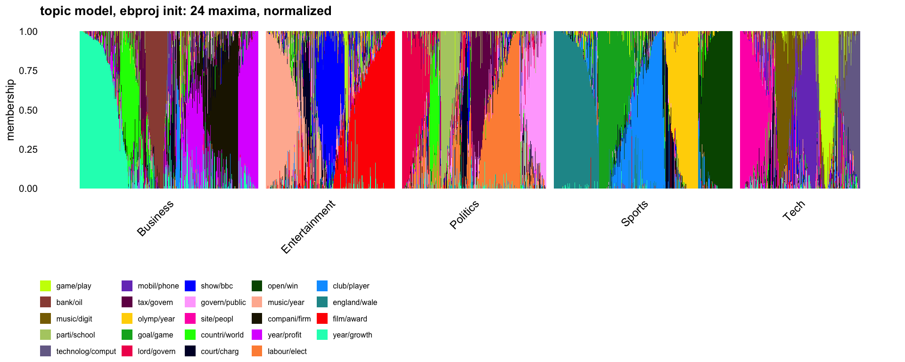
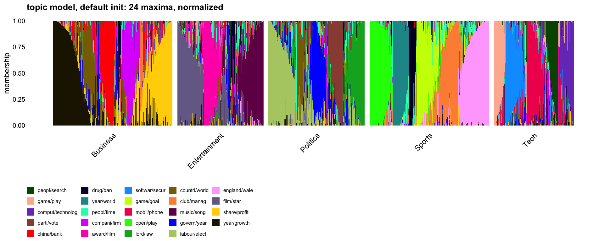
Comparing memberships rather than word loadings is the fairer test here: the EBproj word loadings are fitted with an intercept, so they measure departure from the corpus average, whereas the topic model has no intercept and its \(F\) is an absolute word distribution. The document memberships carry no such asymmetry — both are non-negative per-document weights on a topic — so they can be correlated directly.
mm <- mnn(cor(A, M$ebproj))
knitr::kable(data.frame(
`EBproj factor` = colnames(A),
topic = ifelse(mm$mutual, paste0("t", mm$j), "-"),
r = fmt(ifelse(mm$mutual, mm$cos, NA)),
`top words of the topic` = ifelse(mm$mutual,
sapply(mm$j, function(j) ft_words(ft$ebp, j)), "-"),
check.names = FALSE), row.names = FALSE,
caption = "EBproj memberships against the fitted topic proportions")| EBproj factor | topic | r | top words of the topic |
|---|---|---|---|
| test/athlet | t4 | (0.36) | court, charg, ban, case, rule, hunt, drug, alleg |
| yuko/russian | t9 | 0.80 | bank, oil, yuko, compani, russian, firm, state, govern |
| bid/offer | t18 | (0.57) | compani, firm, share, financi, stock, bid, market, busi |
| virus/secur | t5 | 0.77 | site, peopl, user, search, secur, mail, virus, net |
| open/win | t6 | 0.94 | open, win, play, final, year, match, set, beat |
| rate/growth | t10 | 0.84 | year, growth, rate, economi, price, month, rise, market |
| olymp/race | t7 | 0.91 | olymp, year, world, athlet, race, european, champion, win |
| award/film | t2 | 0.75 | film, award, star, year, actor, director, oscar, nomin |
| mobil/phone | t11 | 0.73 | mobil, phone, servic, peopl, broadband, network, technolog, net |
| number/top | - | - | - |
| england/wale | t12 | 0.93 | england, wale, ireland, game, rugbi, nation, franc, half |
| blair/brown | t16 | 0.72 | labour, elect, blair, parti, tori, howard, campaign, brown |
| lord/law | t15 | 0.77 | lord, govern, law, home, right, secretari, terror, bill |
| tori/parti | - | - | - |
| profit/sale | t17 | 0.75 | year, profit, sale, china, market, airlin, compani, cost |
| dollar/trade | - | - | - |
| minut/half | - | - | - |
| worldcom/fraud | - | - | - |
| game/consol | t22 | 0.86 | game, play, consol, time, titl, releas, video, gamer |
| band/album | t24 | 0.91 | music, year, song, band, album, record, chart, number |
| chelsea/club | t8 | (0.66) | club, player, play, footbal, team, manag, year, sport |
| show/bbc | t1 | 0.87 | show, bbc, broadcast, programm, televis, channel, year, seri |
| music/digit | t23 | (0.62) | music, digit, technolog, gadget, player, appl, download, dvd |
| countri/aid | t3 | 0.72 | countri, world, aid, presid, nation, econom, govern, intern |
t(sapply(names(M), function(k) {
m <- mnn(cor(A, M[[k]]))
c(`mutual pairs` = sum(m$mutual), `of` = ncol(A),
`median r` = round(median(m$cos[m$mutual]), 2),
`min r` = round(min(m$cos[m$mutual]), 2),
`max r` = round(max(m$cos[m$mutual]), 2))
})) mutual pairs of median r min r max r
ebproj 19 24 0.77 0.36 0.94
default 17 24 0.77 0.64 0.95Nineteen of the 24 EBproj factors survive into the fitted topic model
as a mutual nearest neighbour, at a median membership correlation of
0.77. The strong ones are the large, distinctive topics — tennis at
0.94, rugby 0.93, athletics 0.91, music 0.91, television 0.87, video
games 0.86 — and the weak one is doping (test/athlet) at
0.36, which the topic model apparently absorbs into a broader sport
topic. Five EBproj factors have no mutual partner at all: the
number/top box-office axis, the tax-and-spend politics
factor, the dollar and trade deficit, the football match report, and the
WorldCom fraud.
One row per topic across the union of the EBproj initialization and
the two topic model fits, anchored on the EBproj factors, with any topic
that no EBproj factor claims added below. Each of the three columns
holds the membership correlation where the topic is present and
- where it is not, so the columns double as presence
indicators. Key words come from the EBproj-initialized topic model where
the row appears in it, otherwise from the default fit, otherwise from
the EBproj word loadings.
me <- mnn(cor(A, M$ebproj)); md <- mnn(cor(A, M$default))
ie <- ifelse(me$mutual, me$j, NA); id <- ifelse(md$mutual, md$j, NA)
med <- mnn(cor(M$ebproj, M$default))
# Topics that no EBproj factor claimed, paired with each other where mutual.
le <- setdiff(seq_len(ncol(M$ebproj)), na.omit(ie))
ld <- setdiff(seq_len(ncol(M$default)), na.omit(id))
je <- ifelse(med$mutual[le] & med$j[le] %in% ld, med$j[le], NA)
ld <- setdiff(ld, na.omit(je))
xe <- c(le, rep(NA, length(ld))); xd <- c(je, ld)
n_eb <- ncol(A); n_x <- length(xe)
col_e <- c(ie, xe); col_d <- c(id, xd) # topic index per row, or NA
# Row label: the EBproj factor name, or the topic's own name if EBproj has no
# such factor.
lbl <- c(colnames(A),
ifelse(!is.na(xe), colnames(M$ebproj)[pmax(xe, 1)],
colnames(M$default)[pmax(xd, 1)]))
# Key words: from the EBproj-initialized fit where the row is in it, else the
# default fit, else the EBproj word loadings.
kw <- ifelse(!is.na(col_e),
sapply(pmax(col_e, 1), function(j) ft_words(ft$ebp, j)),
ifelse(!is.na(col_d),
sapply(pmax(col_d, 1), function(j) ft_words(ft$def, j)),
c(sapply(seq_len(n_eb), function(j) top_words(efx, j, 8)),
rep("", n_x))))
# A correlation where the row has an EBproj factor to correlate against,
# "present" where it does not, "-" where the fit lacks the topic entirely.
tab <- data.frame(
factor = lbl,
EBproj = c(rep("yes", n_eb), rep("-", n_x)),
`topic: EBproj init` = c(fmt(ifelse(me$mutual, me$cos, NA)),
ifelse(is.na(xe), "-", "present")),
`topic: default` = c(fmt(ifelse(md$mutual, md$cos, NA)),
ifelse(is.na(xd), "-", "present")),
`key words` = kw, check.names = FALSE)
knitr::kable(tab, row.names = FALSE,
caption = "Union of the EBproj factors and the topics of the two fits")| factor | EBproj | topic: EBproj init | topic: default | key words |
|---|---|---|---|---|
| test/athlet | yes | (0.36) | 0.73 | court, charg, ban, case, rule, hunt, drug, alleg |
| yuko/russian | yes | 0.80 | 0.76 | bank, oil, yuko, compani, russian, firm, state, govern |
| bid/offer | yes | (0.57) | - | compani, firm, share, financi, stock, bid, market, busi |
| virus/secur | yes | 0.77 | 0.81 | site, peopl, user, search, secur, mail, virus, net |
| open/win | yes | 0.94 | 0.95 | open, win, play, final, year, match, set, beat |
| rate/growth | yes | 0.84 | 0.84 | year, growth, rate, economi, price, month, rise, market |
| olymp/race | yes | 0.91 | 0.95 | olymp, year, world, athlet, race, european, champion, win |
| award/film | yes | 0.75 | 0.86 | film, award, star, year, actor, director, oscar, nomin |
| mobil/phone | yes | 0.73 | (0.69) | mobil, phone, servic, peopl, broadband, network, technolog, net |
| number/top | yes | - | - | number, top, box, chart, film, offic, week, place |
| england/wale | yes | 0.93 | 0.93 | england, wale, ireland, game, rugbi, nation, franc, half |
| blair/brown | yes | 0.72 | 0.74 | labour, elect, blair, parti, tori, howard, campaign, brown |
| lord/law | yes | 0.77 | 0.77 | lord, govern, law, home, right, secretari, terror, bill |
| tori/parti | yes | - | - | tori, parti, labour, howard, elect, tax, conserv, leader |
| profit/sale | yes | 0.75 | (0.67) | year, profit, sale, china, market, airlin, compani, cost |
| dollar/trade | yes | - | - | dollar, trade, oil, price, euro, deficit, export, market |
| minut/half | yes | - | - | minut, half, goal, ball, score, penalti, kick, lead |
| worldcom/fraud | yes | - | (0.66) | compani, firm, airlin, execut, account, fraud, chief, air |
| game/consol | yes | 0.86 | 0.89 | game, play, consol, time, titl, releas, video, gamer |
| band/album | yes | 0.91 | 0.90 | music, year, song, band, album, record, chart, number |
| chelsea/club | yes | (0.66) | (0.64) | club, player, play, footbal, team, manag, year, sport |
| show/bbc | yes | 0.87 | - | show, bbc, broadcast, programm, televis, channel, year, seri |
| music/digit | yes | (0.62) | - | music, digit, technolog, gadget, player, appl, download, dvd |
| countri/aid | yes | 0.72 | (0.67) | countri, world, aid, presid, nation, econom, govern, intern |
| govern/public | - | present | - | govern, public, plan, minist, work, peopl, year, local |
| parti/school | - | present | present | parti, school, children, women, educ, ukip, kilroy, silk |
| tax/govern | - | present | present | tax, govern, spend, budget, increas, year, cut, plan |
| technolog/comput | - | present | present | technolog, comput, work, make, peopl, develop, power, patent |
| goal/game | - | present | - | goal, game, minut, time, unit, play, arsenal, chelsea |
| peopl/search | - | - | present | peopl, search, hunt, inform, blog, onlin, site, googl |
| peopl/time | - | - | present | peopl, time, thing, make, work, good, day, back |
| club/manag | - | - | present | club, manag, player, footbal, liverpool, unit, year, leagu |
| film/star | - | - | present | film, star, year, show, festiv, movi, offic, includ |
c(`EBproj factors` = ncol(A),
`topics, EBproj init` = ncol(M$ebproj),
`topics, default` = ncol(M$default),
`rows in the union` = nrow(tab),
`in all three` = sum(tab$EBproj == "yes" &
tab$`topic: EBproj init` != "-" &
tab$`topic: default` != "-")) EBproj factors topics, EBproj init topics, default rows in the union
24 24 24 33
in all three
16 Across the three there are 33 distinct topics, of which 16 appear in
all three and nine are found by only one. The EBproj-only ones are the
four listed above plus chelsea/club, which both topic
models find only loosely (0.66 and 0.64). Going the other way, the
default fit contributes four topics neither of the others has, and two
of them — peopl, time, thing, make, work, good and
peopl, search, hunt, inform, blog, onlin — are the diffuse
factors noted earlier, so the extra topics it finds are the weaker
ones.
Two caveats on reading this as “the initialization persisted”. First,
the correspondence is one of topics, not of column indices:
only L is supplied, so F starts random and the
topic labels shuffle in the first few updates. Second, and more
importantly, the default fit agrees with the EBproj memberships about as
well as the EBproj-initialized fit does — 17 mutual pairs at median
0.77, against 19 at 0.77. Much of that agreement is therefore just both
topic models finding the same structure the EBproj factors describe, not
a trace of the starting point. The benefit of the initialization
shows up in the likelihood and in which topics get separated, not in the
memberships being closer to where they started.
Worth noting how different the starting point is from what fastTopics
would normally be given: the EBproj memberships are 84.5% exactly zero,
with a median of 30 documents above 0.5 per factor. It is a far sparser
and more committed initialization than topicscore produces,
which is presumably why it lands in a different basin.
output/.exp_fixed collapses.
sessionInfo()R version 4.4.2 (2024-10-31)
Platform: aarch64-apple-darwin20
Running under: macOS 26.5.2
Matrix products: default
BLAS: /System/Library/Frameworks/Accelerate.framework/Versions/A/Frameworks/vecLib.framework/Versions/A/libBLAS.dylib
LAPACK: /Library/Frameworks/R.framework/Versions/4.4-arm64/Resources/lib/libRlapack.dylib; LAPACK version 3.12.0
locale:
[1] en_US.UTF-8/en_US.UTF-8/en_US.UTF-8/C/en_US.UTF-8/en_US.UTF-8
time zone: America/Chicago
tzcode source: internal
attached base packages:
[1] stats graphics grDevices utils datasets methods base
other attached packages:
[1] fastTopics_0.7-38 ggplot2_4.0.2
loaded via a namespace (and not attached):
[1] gtable_0.3.6 xfun_0.56 bslib_0.10.0
[4] htmlwidgets_1.6.4 ggrepel_0.9.6 lattice_0.22-9
[7] quadprog_1.5-8 vctrs_0.7.2 tools_4.4.2
[10] generics_0.1.4 parallel_4.4.2 Polychrome_1.5.4
[13] tibble_3.3.1 pkgconfig_2.0.3 Matrix_1.7-4
[16] data.table_1.18.2.1 SQUAREM_2026.1 RColorBrewer_1.1-3
[19] S7_0.2.1 scatterplot3d_0.3-44 RcppParallel_5.1.11-1
[22] lifecycle_1.0.5 truncnorm_1.0-9 compiler_4.4.2
[25] farver_2.1.2 stringr_1.6.0 git2r_0.36.2
[28] progress_1.2.3 RhpcBLASctl_0.23-42 httpuv_1.6.16
[31] htmltools_0.5.9 sass_0.4.10 yaml_2.3.12
[34] lazyeval_0.2.2 plotly_4.12.0 later_1.4.6
[37] pillar_1.11.1 crayon_1.5.3 jquerylib_0.1.4
[40] tidyr_1.3.2 uwot_0.2.4 cachem_1.1.0
[43] gtools_3.9.5 tidyselect_1.2.1 digest_0.6.39
[46] Rtsne_0.17 stringi_1.8.7 reshape2_1.4.5
[49] dplyr_1.2.0 purrr_1.2.1 ashr_2.2-69
[52] labeling_0.4.3 cowplot_1.2.0 rprojroot_2.1.1
[55] fastmap_1.2.0 grid_4.4.2 colorspace_2.1-2
[58] cli_3.6.5 invgamma_1.2 magrittr_2.0.4
[61] withr_3.0.2 prettyunits_1.2.0 scales_1.4.0
[64] promises_1.5.0 rmarkdown_2.30 httr_1.4.8
[67] otel_0.2.0 workflowr_1.7.2 hms_1.1.4
[70] pbapply_1.7-4 evaluate_1.0.5 knitr_1.51
[73] irlba_2.3.7 viridisLite_0.4.3 rlang_1.1.7
[76] Rcpp_1.1.1 mixsqp_0.3-54 glue_1.8.0
[79] rstudioapi_0.18.0 jsonlite_2.0.0 plyr_1.8.9
[82] R6_2.6.1 fs_1.6.6